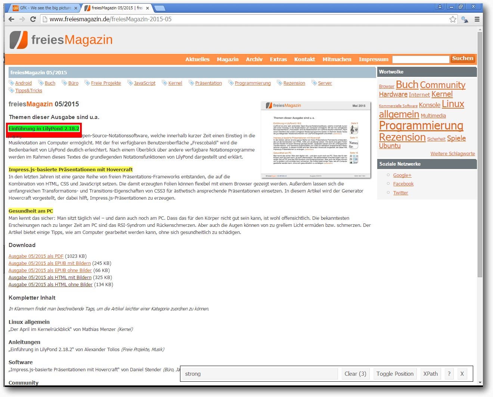
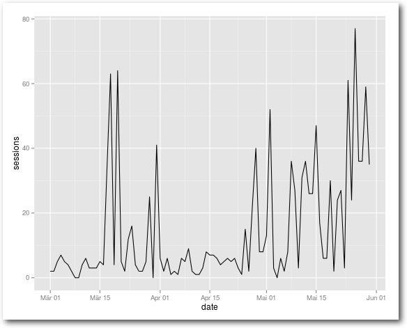
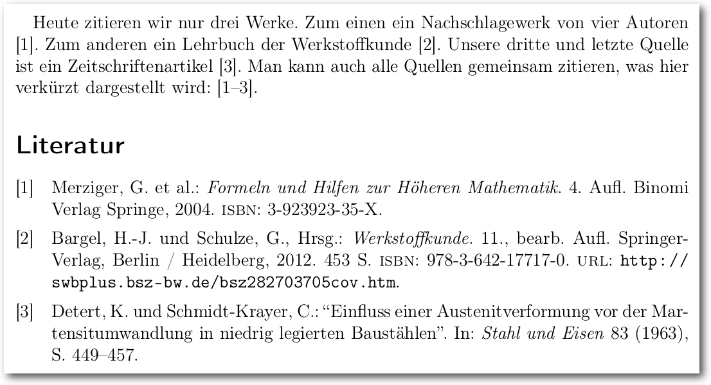
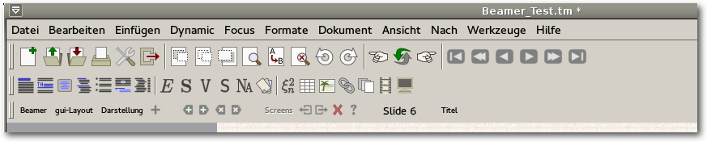
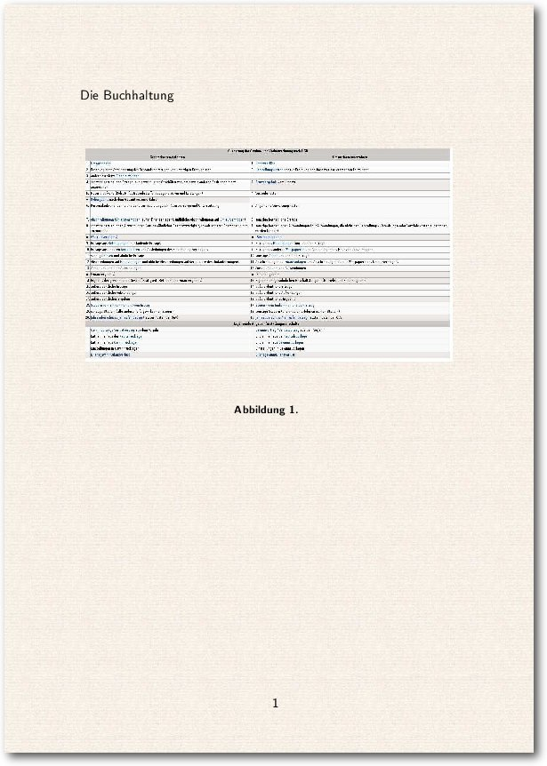

freiesMagazin August 2015
(ISSN 1867-7991)
Themen dieser Ausgabe sind u. a.
Webscraping mit RModerne Web Scraping Tools und APIs erleichtern die gezielte Extraktion von Informationen und Elementen aus dem Internet. Dieser Artikel zeigt, wie mit der freien Statistikumgebung R und entsprechenden R-Paketen strukturierte und unstrukturierte Daten gezielt geladen und anschließend statistisch analysiert werden können. (weiterlesen)
Modifizieren eines Biblatex-Stils
Dieser Artikel richtet sich an Nutzer von LaTeX, welche sich erstmals damit konfrontiert sehen, besondere Vorgaben bei der Bibliografie umsetzen zu müssen, welche sich mit Standardstilen nicht vollständig realisieren lassen. (weiterlesen)
Ubuntu Phone: Das Meizu MX4 näher angeschaut
Seit Ende Juni ist das Meizu MX4 in der EU über ein Invite-System zu bestellen. Das Meizu MX4 reiht sich neben dem bq Aquaris E4.5 und dem bq Aquaris E5 als drittes Ubuntu Phone ein. Es ist das erste Phone, welches vom chinesischen Hersteller Meizu erschienen ist. In diesem Artikel wird das Gerät einer näheren Betrachtung unterzogen. (weiterlesen)
Zum Inhaltsverzeichnis
Inhalt
Linux allgemein
Der Juli im Kernelrückblick
Anleitungen
Web Scraping mit R
Modifizieren eines Biblatex-Stils
Software
TeXmacs als Präsentationstool nutzen
Eine kurze Einführung in gnuplot
Das Konsolentool top
Hardware
Ubuntu Phone: Das Meizu MX4 näher angeschaut
Community
Rezension: Das Arduino-Training – Sehen wie's geht!
Rezension: jQuery in Easy Steps
Rezension: Adventures in Python
Magazin
Editorial
Leserbriefe
Veranstaltungen
Vorschau
Konventionen
Impressum
Zum Inhaltsverzeichnis
Editorial
Truck Factor
Die kürzlich als Preprint [1] erschienenen Ergebnisse eines Forschungsteams der UFMG [2] in Brasilien zeigen auf, dass etliche populäre Projekte, die auf GitHub [3] gehostet werden, von nur ganz wenigen Entwicklern abhängen. Diese Projekte könnten also sehr schnell ins Stocken geraten, wenn diese treibenden Kräfte ausfielen. Konkret schätzen die Forscher für 133 GitHub-Projekte den sog. „Truck Factor“ (auch bekannt als „Bus Factor“) ab, mit dem beschrieben wird, wieviele Mitarbeiter in einem Softwareprojekt ausfallen können, ohne das Projekt an sich zu gefährden: „How many or few would have to be hit by a truck (or quit) before the project is incapacitated?“ Je kleiner dieser Wert ist, desto anfälliger ist das Projekt – der schlechteste Wert von 1 besagt, dass beim Ausfall eines beliebigen Mitarbeiters das Projekt zum Scheitern verurteilt ist. Die Forscher kommen in ihrer Studie zum Ergebnis, dass knapp die Hälfte der untersuchten Projekte einen Truck Factor von nur 1 haben, darunter z. B. Clojure (eine Programmier-Sprache [4]). Einen etwas höheren Truck Factor von 2 haben Projekte wie Jekyll (ein Generator für statische Webseiten [5]) oder pdf.js (ein JavaScript-Reader für PDF-Dokumente [6]). Ruby [7] hat den Truck Factor 4, die Skriptsprache PHP [8] einen deutlich höheren Truck Factor 11, während der Linux-Kernel [9] einen sehr hohen Truck Factor von 90 besitzt. In der Tat arbeiten viele Entwickler am Linux-Kernel mit, aber bislang muss jeder Commit noch Linux-Erfinder Linus Torvalds abgesegnet werden. Die Nachfolgefrage ist aber auch in diesem Projekt noch nicht geklärt [10]. Auch wenn das Peer Review dieser Arbeit erst begonnen hat, zeigt sie doch eine verwundbare Stelle auf. Vielleicht nutzen Sie diese Gelegenheit ja, um sich in Zukunft in ihr Lieblingsprojekt einzubringen und so den Truck Factor zu erhöhen. Und nun wünschen wir Ihnen viel Spaß mit der neuen Ausgabe. Ihre freiesMagazin-Redaktion Links[1] https://peerj.com/preprints/1233v1/
[2] https://www.ufmg.br/english/
[3] https://github.com/
[4] https://github.com/clojure/clojure
[5] https://github.com/sass/sass
[6] https://github.com/jekyll/jekyll/
[7] https://github.com/mozilla/pdf.js/
[8] https://github.com/ruby/ruby
[9] https://github.com/php/php-src
[10] https://github.com/torvalds/linux
[11] http://www.bloomberg.com/news/articles/2015-06-16/the-creator-of-linux-on-the-future-without-him
Beitrag teilen Beitrag kommentieren
Zum Inhaltsverzeichnis
Der Juli im Kernelrückblick
von Mathias Menzer Basis aller Distributionen ist der Linux-Kernel, der fortwährend weiterentwickelt wird. Welche Geräte in einem halben Jahr unterstützt werden und welche Funktionen neu hinzukommen, erfährt man, wenn man den aktuellen Entwickler-Kernel im Auge behält.Die Entwicklung von Linux 4.2
Endete der Juni mit der Freigabe von Linux 4.1 (siehe freiesMagazin 07/2015 [1]), so startete der Folgemonat mit der Entwicklerversion von Linux 4.2 [2]. Diese schien sich keinesfalls im Schatten irgendeiner anderen Version verstecken zu wollen, denn dazu wäre sie viel zu groß. Über eine Million Zeilen an Quelltext wurden von den Entwicklern modifiziert, wodurch Linux 4.2-rc1 deutlich aus den Versionen der letzten Jahre heraussticht. Aus dem 4er- und 3er-Kernel-Zweig übertreffen lediglich zwei Versionen den aktuellen Erstling und in beiden Fällen waren Verschiebungen großen Mengen an Dateien die Ursache.Die Zahl der gelöschten Zeilen bleibt diesmal eher im Normbereich, wodurch der Linux-Kernel diesmal besonders stark anwächst. Auslöser des aktuellen Größenwahns ist der neue amdgpu-Treiber. Dieser wird für neuere Generationen von AMDs Grafikprozessoren benötigt und soll grundsätzlich eine einfachere Userspace-Schnittstelle mitbringen. amdgpu bringt ebenfalls umfassende Definitionen für Register mit, die direkt AMDs Datenbanken entstammen. Diese Auflistung der von den GPUs genutzten Speicherstellen ist in etwa fünfmal größer als der eigentliche Treiber. Ein wenig geruhsamer kam dann Linux 4.2-rc2 [3] daher. Hier fiel vor allem die Verlagerung von rbtree in einen anderen Bereich der Kernel-Quellen auf. Red-Black-Trees [4], ein sogenannter Suchbaum, stellt eine Struktur zum strukturierten Speichern von Daten dar, wie dies beispielsweise in Dateisystemen geschieht. Eine prominentere Art ist der unter anderem von btrfs genutzte B-Tree [5]. Mit ein paar Änderungen mehr konnte dann der -rc3 [6] aufwarten. Diese ließen sich jedoch schon zum größten Teil mit Fehlerkorrekturen erklären. Ein paar Aufräumarbeiten am Code für die Speicherverwaltung verteilten sich über fast alle Plattformen. Linux 4.2-rc4 [7] machte ebenfalls noch nicht den Eindruck, als könnte die Entwicklung in Bälde zu Ende gehen. Die größte Änderung – über ein Viertel der geänderten Quelltextzeilen – entfiel jedoch auf die Verschiebung einer speziellen virtio-Implementierung in einen anderen Bereich, was jedoch erst einmal keine funktionalen Änderungen mit sich bringt. Diese Ein-/Ausgabe-Bibliothek für virtuelle Umgebungen muss unter IBMs s390-Architektur mit Command Channels, speziellen Befehlssätzen für die Verwaltung von Ein-/Ausgabe-Operationen, umgehen können. Ebenfalls schwer ins Gewicht fiel das Entfernen einer neuen Funktion für den Intel-WLAN-Treiber iwlwifi – diesmal sind funktionelle Änderungen jedoch erwünscht, denn die Einführung mehrerer Warteschlangen für eingehende Netzwerkpakete führt zu Problemen, die die Firmware einiger WLAN-Chips zum Absturz brachte.Warten auf den (kd)Bus
Obwohl er bereits für die Aufnahme zum Merge Window für Linux 4.1 vorlag, hat es das Interprozess-Kommunikationssystem kdbus [8] wieder nicht in den aktiven Kernel geschafft [9]. Während bei 4.1 der Grund für die Ablehnung noch in Unzufriedenheiten mit der Implementierung seitens der Kernel-Entwickler zu suchen war, stoppte diesmal Hauptentwickler Greg Kroah-Hartman selbst die Aufnahme. Das Team von kdbus wird die Zeit bis zum Beginn des nächsten Entwicklungszyklus noch nutzen, um einige Unstimmigkeiten auszuräumen [10].mv ext3 /dev/null
Mancher mag kurz innehalten, wenn er von dem Vorschlag liest, dass der Treiber für das ext3-Dateisystem [11] aus Linux entfernt werden soll, war dies doch jahrelang das Standard-Dateisystem vieler Distributionen [12]. Doch faktisch dürfte der Verlust eher sentimentaler Natur sein. Der Treiber des designierten Nachfolgers ext4 [13] kann auch mit ext3-Dateisystemen umgehen und soll dies nach dem Willen des derzeitigen ext3-Betreuers künftig auch tun [14]. Auch der Betreuer von ext4, Theodore Ts'o, hat sich mittlerweile in die Debatte eingeklinkt und die Umstellung befürwortet. So könnte Linux 4.3 nach 14 Jahren der erste Kernel mit ext3-Unterstützung, jedoch ohne ext3-Treiber werden. Links[1] http://www.freiesmagazin.de/freiesMagazin-2015-07
[2] https://lkml.org/lkml/2015/7/5/218
[3] https://lkml.org/lkml/2015/7/12/184
[4] https://de.wikipedia.org/wiki/Rot-Schwarz-Baum
[5] https://de.wikipedia.org/wiki/B-Baum
[6] https://lkml.org/lkml/2015/7/19/355
[7] https://lkml.org/lkml/2015/7/26/84
[8] https://de.wikipedia.org/wiki/D-Bus#kdbus
[9] http://www.pro-linux.de/-0h2157cd
[10] https://lkml.org/lkml/2015/6/26/512
[11] https://de.wikipedia.org/wiki/Ext3
[12] http://www.pro-linux.de/-0h215804
[13] https://de.wikipedia.org/wiki/Ext4
[14] https://lkml.org/lkml/2015/7/15/438
| Autoreninformation |
| Mathias Menzer (Webseite) behält die Entwicklung des Linux-Kernels im Blick, um über kommende Funktionen von Linux auf dem Laufenden zu bleiben. und immer mit interessanten Abkürzungen und komplizierten Begriffen dienen zu können. |
Beitrag teilen Beitrag kommentieren
Zum Inhaltsverzeichnis
Web Scraping mit R
von Markus Herrmann und Barbara Wolf Moderne Web Scraping Tools und APIs erleichtern die gezielte Extraktion von Informationen und Elementen aus dem Internet ganz wesentlich, insbesondere wenn die Daten nicht als strukturierte Datei zum Download angeboten werden. Mit der freien Statistikumgebung R und entsprechenden R-Paketen können strukturierte und unstrukturierte Daten gezielt geladen und anschließend statistisch analysiert werden.Web Scraping
Als „Web Scraping“ bezeichnet man die Extraktion von Informationen aus Webseiten, oder ganz allgemein, aus dem Internet. Der Unterschied zum einfachen Kopieren von Informationen aus Internetseiten besteht darin, dass dieser Vorgang mittels Softwarelösungen weitgehend automatisiert stattfindet. Diese Vorgehensweise ist im Allgemeinen nicht ungewöhnlich. Beispielsweise stellen die Kommandozeilenprogramme GNU Wget [1] oder cURL [2] bereits seit Mitte der 90er Jahre Funktionalitäten zum Download von Dateien und Webseiten aus dem Internet zur Verfügung und sind in vielen Linux-Distributionen fest integriert.Web Scraping – neuer Name, alter Hut?
Web Scraping ist also nur ein weiterer neuer Begriff für einen alten Hut? Nicht ganz, denn moderne Scraping Tools und APIs erleichtern, im Vergleich zu den eben genannten terminalbasierten Diensten, die gezielte Extraktion von Informationen und Elementen ganz wesentlich. Insbesondere wenn die Daten nicht als strukturierte Datei zum Download angeboten werden, aber dennoch (statistisch) weiterverarbeitet werden sollen, bieten entsprechende Tools komfortable Lösungen.Datentransformation & statistische Analyse
Moderne Web Scraping Tools erledigen dabei nicht nur den Download, sondern auch die Transformation unstrukturierter (HTML-)Daten in ein geeignetes Analyseformat. Beliebte Scraping-Ziele sind beispielsweise HTML-Tabellen. Ein Programm, das sich sowohl für Web Scraping, als auch zur statistischen Analyse der „gescrapten“ Daten eignet ist „R“.Was ist R?
R [3] ist eine der bekanntesten Entwicklungsumgebungen für statistisches Rechnen und wird auf breiter Ebene in Wissenschaft und Wirtschaft eingesetzt. R eignet sich dabei sowohl für einfache deskriptive Analysen, als auch für komplexe statistische Modellierungen und läuft prinzipiell auf allen gängigen Betriebssystemen. Zur Installation stehen Binärpakete und Quellcode zur Verfügung [4], R ist aber auch in einigen systemeigenen Paketmanagern zu finden (z. B. als r-base unter Apt [5]).„Comprehensive R Archive Network“ (CRAN)
Die Basisinstallation von R kann um eine Vielzahl an Paketen („R-packages“ bzw. „library“) erweitert werden, die über das „Comprehensive R Archive Network“ (CRAN) [4] bezogen werden können. Eine spezielle Sektion zum Thema Webtechnologien [6] gibt (laufend aktualisiert) einen Überblick über R-packages, die zur Sammlung und zum Download von Daten aus dem Internet dienen.R-packages zum „Scrapen“
Im Wesentlichen unterscheiden sich diese R-packages durch die Art des Zugriffs auf die Datenquellen im Internet. Hierbei ist meist zwischen cURL-basierten Lösungen (low-level) und Paketen mit integrierten API-Anbindungen (high-level) zu unterscheiden. Die low-level R-packages „Rcurl“, „XML“, „httr“, „rjson“ und „RJSONIO“ sind allerdings so essentiell, dass sie für die meisten high-level Lösungen als Abhängigkeit gelistet sind [7]. Die unten folgende Auswahl an R-packages eignet sich besonders für Scraping- und Parsing-Aufgaben.| „Low-level“ - Scraping | |
| R-Package | Funktion |
| XML [8] | XML-Parser und -Generator |
| curl [9] | Netzwerk-Interface |
| RCurl [10] | Netzwerk-Interface |
| httr [11] | Wrapper für RCurl |
| rjson [12] | JSON-Parser und -Generator |
| jsonlite [13] | JSON-Parser und -Generator |
| RJSONIO [14] | JSON-Parser und -Generator |
| selectr [15] | CSS-XPath Konverter |
| rvest [16] | Wrapper für XML und httr |
| magrittr [17] | Pipe-Operator |
| R-packages mit API-Anbindung | |
| R-Package | Funktion |
| ggmap [18] | Google Maps API |
| RgoogleMaps [19] | Google Maps API |
| RGoogleDocs [20] | Google Docs API |
| googlesheets [21] | Google Spreadsheet API |
| scholar [22] | Google Scholar API |
| ganalytics [23] | Google Analytics API |
| rga [24] | Google Analytics API |
| Rfacebook [25] | Facebook API |
| twittR [26] | Twitter API |
| wikipediatrend [27] | stats.grok.se API |
Web Scraping Beispiele mit R
Die nachfolgenden Beispiele sollen einen ersten Einblick in die Anwendungsmöglichkeiten der R-packages rvest, ggmap und ganalytics vermitteln. Die Verwendung des „Selector Gadget“ zeigt dabei, wie relevante Inhalte einer Website visuell selektiert werden können.Web Scraping mit dem Paket rvest
Das Paket rvest ermöglicht Low-Level-Scraping mit R. Im Folgenden wird eine Tabelle aus Wikipedia [28] ausgelesen. Tabellen dieser Webseite werden dabei als .wikitable referenziert. Das Paket rvest befindet sich auf den CRAN-Spiegelservern und lässt sich deshalb komfortabel auf der R-Konsole mit dem Funktionsaufruf install.packages("rvest") installieren. Eine allgemeine Beschreibung zur Verwendung des Pakets ist im rvest-Manual [29] zu finden. Folgendermaßen wird das Paket und die Definition der gewünschten Webseite (hier der deutsche Wikipedia Artikel „Liste der Groß- und Mittelstädte in Deutschland“) geladen:> library(rvest)
> website <- "http://de.wikipedia.org/wiki/Liste_der_Gro%C3%9F-_und_Mittelst%C3%A4dte_in_Deutschland"
Mit der Funktion html ruft man anschließend den Seitenquelltext auf:
> website <- "http://de.wikipedia.org/wiki/Liste_der_Gro%C3%9F-_und_Mittelst%C3%A4dte_in_Deutschland"
> cities <- html(website)
Als Ausgabe erhält man mit cities folgenden unformatierten html-Text (Ausschnitt):
<td align="left">Nordrhein-Westfalen</td>
</tr>
<tr>
<td>624.</td>
<td align="left"><a href="/wiki/Hockenheim" title="Hockenheim">Hockenheim</a></td>
<td>15.670</td>
Als nächstes extrahiert man die gewünschten Nodes. Im Beispiel werden alle
html-Tabellen über .wikitable herausgefiltert. Das Ergebnis ist immer noch
Quelltext:
</tr>
<tr>
<td>624.</td>
<td align="left"><a href="/wiki/Hockenheim" title="Hockenheim">Hockenheim</a></td>
<td>15.670</td>
> cities <- html_nodes(x = cities, css = ".wikitable")
Nun wandelt man die HTML-Tabellen in rechteckige R-Dataframes für die weitere
(statistische) Verarbeitung um:
> cities <- html_table(cities)
und wählt den ersten „Dataframe“ aus:
> cities[[1]]
Das Ergebnis findet man weiter unten in der Ausgabe der Liste der Groß- und Mittelstädte durch „rvest“.
Elegantes „Forward-Piping“ mit dem R-package magrittr
Verschiedene Operationen lassen sich zudem übersichtlich über Pipeline-Kommandos mit zusätzlicher Unterstützung des R-Package magrittr kombinieren. Die Installation des Pakets erfolgt auch hier über CRAN mit install.packages("magrittr"). Die oben beschriebenen Operationen lassen sich nun elegant mit dem Pipe-Operator %>% auf den folgenden Ausdruck verdichten:> library(magrittr)
> cities <- html(website) %>% html_nodes(".wikitable") %>% html_table(header = TRUE, fill = TRUE) %>% .[[1]]
> cities <- html(website) %>% html_nodes(".wikitable") %>% html_table(header = TRUE, fill = TRUE) %>% .[[1]]
Land Großstädte Mittelstädte gesamt
1 Nordrhein-Westfalen 28 178 20
2 Baden-Württemberg 9 90 99
3 Niedersachsen 6 82 88
4 Bayern 8 59 67
5 Hessen 5 53 58
6 Brandenburg 1 25 26
7 Sachsen 3 22 25
8 Sachsen-Anhalt 2 23 25
9 Rheinland-Pfalz 4 16 20
10 Schleswig-Holstein 2 18 20
11 Thüringen 2 17 19
12 Saarland 1 9 10
13 Mecklenburg-Vorpommern 1 8 9
14 Bremen 2 0 2
15 Berlin 1 0 1
16 Hamburg 1 0 1
Listing: Ausgabe der Liste der Groß- und Mittelstädte durch „rvest“.
1 Nordrhein-Westfalen 28 178 20
2 Baden-Württemberg 9 90 99
3 Niedersachsen 6 82 88
4 Bayern 8 59 67
5 Hessen 5 53 58
6 Brandenburg 1 25 26
7 Sachsen 3 22 25
8 Sachsen-Anhalt 2 23 25
9 Rheinland-Pfalz 4 16 20
10 Schleswig-Holstein 2 18 20
11 Thüringen 2 17 19
12 Saarland 1 9 10
13 Mecklenburg-Vorpommern 1 8 9
14 Bremen 2 0 2
15 Berlin 1 0 1
16 Hamburg 1 0 1
Webscraping mit „rvest“ und dem „Selector Gadget“
Nicht immer ist auf den ersten Blick klar ersichtlich, wie die gewünschten html-Nodes angesprochen werden können. Unterstützung bietet hierzu das „Selector Gadget“ [30]. Durch interaktives Klicken auf einer Webseite können zunächst die gewünschten Elemente ausgewählt werden, bevor man durch entsprechende Markierungen den „css selector“ erhält, welcher für die spätere Auswahl der gewünschten Komponenten verwendet wird.Installation des Selector Gadget
Das Selector Gadget ist als „Vignette“ des rvest-Package im CRAN gelistet [31] und wird als Browser-Add-on verwendet. Die Installation ist dabei denkbar einfach. Im Firefox Browser muss das Add-on lediglich zu den Browser-Lesezeichen hinzugefügt werden, für den Chrome Browser wird eine entsprechende Erweiterung im Chrome Web Store angeboten [32].Aktivierung des Selector Gadget
Nach dem Aufruf einer Webseite muss das Selector Gadget zunächst im Browser aktiviert werden. Dies gelingt unter Firefox durch Anklicken des entsprechenden Lesezeichens, unter Chrome genügt ein Klick auf das durch die Installation angelegte Schaltflächensymbol.Auswahl der gewünschten Elemente
Im unteren rechten Bildschirmbereich steht nach der Aktivierung die Dialogbox des Selector Gadgets bereit. Durch Anklicken lassen sich bestimmte Elemente der Webseite markieren. Im Beispiel wird der Textbereich „Einführung in LilyPond 2.18.2“ markiert, welcher dadurch grün hervorgehoben wird. Alle ähnlichen Elemente werden nun durch die Farbe Gelb gekennzeichnet und im unteren Fenster erscheint die Klasse des CSS-Elements („css-selector“). Alle grün und gelb hinterlegten Felder können damit später extrahiert werden. Durch erneutes Klicken lassen sich einzelne Elemente auch deaktivieren (durch die Farbe Rot gekennzeichnet). „Selector Gadget“.
Folgendermaßen kann der „css selector“ mit rvest verknüpft werden:
> website <- "http://www.freiesmagazin.de/freiesMagazin-2015-05"
> freiesMagazinMai <- html(website) %>%
html_nodes("strong") %>%
html_text()
> unlist(freiesMagazinMai)
Als Ergebnis erhält man:
> freiesMagazinMai <- html(website) %>%
html_nodes("strong") %>%
html_text()
> unlist(freiesMagazinMai)
[1] "Einführung in LilyPond 2.18.2"
[2] "Impress.js-basierte Präsentationen mit Hovercraft"
[3] "Gesundheit am PC"
[2] "Impress.js-basierte Präsentationen mit Hovercraft"
[3] "Gesundheit am PC"
Paket ggmap
Die Hauptfunktionalität des Pakets ggmap besteht zwar in der Visualisierung von Geo-Daten in Verbindung mit dem Paket ggplot2 [33], aber es lassen sich auch einfachere Geocoding-Aufgaben und Routingplanungen mit Hilfe der Google Maps API [34] durchführen. ggmap befindet sich ebenfalls auf den CRAN-Spiegelservern, die Installation des Pakets erfolgt daher analog zu rvest und magrittr mit install.packages("ggmap"). Als Beispiel schauen wir nach der Geocodierung der Stadt Berlin:> library(ggmap)
> geocode("Berlin")
#stdout:
Information from URL : http://maps.googleapis.com/maps/api/geocode/json?address=Berlin&sensor=false
Google Maps API Terms of Service : http://developers.google.com/maps/terms
lon lat
1 13.40495 52.52001
Die Initialisierung einer Distanzmatrix für die Städte München, Nürnberg,
Frankfurt, Hamburg und Berlin könnte so erfolgen:
> geocode("Berlin")
#stdout:
Information from URL : http://maps.googleapis.com/maps/api/geocode/json?address=Berlin&sensor=false
Google Maps API Terms of Service : http://developers.google.com/maps/terms
lon lat
1 13.40495 52.52001
# Städte
> cities <- c("München", "Nürnberg", "Frankfurt", "Hamburg", "Berlin")
# Initialisierung einer Distanzmatrix
> num_cities <- length(cities)
> distance_matrix <- matrix(data = NA, ncol = num_cities, nrow = num_cities)
> colnames(distance_matrix) <- cities
> rownames(distance_matrix) <- cities
Anschließend fragt man alle Entfernungen via Google Maps API ab
und befüllt die Matrix:
> cities <- c("München", "Nürnberg", "Frankfurt", "Hamburg", "Berlin")
# Initialisierung einer Distanzmatrix
> num_cities <- length(cities)
> distance_matrix <- matrix(data = NA, ncol = num_cities, nrow = num_cities)
> colnames(distance_matrix) <- cities
> rownames(distance_matrix) <- cities
> for (i in 1:num_cities){
for (j in 1:num_cities){
distance_matrix[i,j] <- as.numeric(mapdist(cities[i], t(cities)[j], output = "simple", messaging = FALSE)[4])
}
}
> (distance_matrix <- round(distance_matrix))
Als Resultat erhält man:
for (j in 1:num_cities){
distance_matrix[i,j] <- as.numeric(mapdist(cities[i], t(cities)[j], output = "simple", messaging = FALSE)[4])
}
}
> (distance_matrix <- round(distance_matrix))
München Nürnberg Frankfurt Hamburg Berlin
München 0 169 392 791 584
Nürnberg 170 0 224 607 449
Frankfurt 395 226 0 497 551
Hamburg 791 607 492 0 288
Berlin 585 437 546 288 0
München 0 169 392 791 584
Nürnberg 170 0 224 607 449
Frankfurt 395 226 0 497 551
Hamburg 791 607 492 0 288
Berlin 585 437 546 288 0
ganalytics
Das R-package ganalytics ermöglicht den Zugriff auf die Google Analytics API [35]. Da dieses Paket nicht über CRAN erhältlich ist, muss es aus alternativen Quellen, hier aus einem Github-Repository, installiert werden. Dies gelingt komfortabel mit dem R-package devtools, welches sich über CRAN mit dem Funktionsaufruf install.packages("devtools") beziehen lässt. Anschließend ist die Installation des Pakets ganalytics mittels devtools ebenfalls ganz einfach:> devtools::install_github("jdeboer/ganalytics")>
Nun kann man die Verbindung zu Google Analytics herstellen:
> library(ganalytics)
# CLIENT_MAIL,CLIENT_ID, CLIENT_SECRET und VIEW_ID sind entsprechend anzupassen
> ga_creds <- GoogleApiCreds(
"<CLIENT_MAIL>",
list(client_id = "<CLIENT_ID>",
client_secret = "<CLIENT_SECRET")
)
> query <- GaQuery(view = <VIEW_ID>, ga_creds)
# Abfrage der täglichen Anzahl an Sessions von März bis Mai
> DateRange(query) <- c("2015-03-01", "2015-05-31")
> Metrics(query) <- "sessions"
> Dimensions(query) <- "date"
> query_result <- GetGaData(query)
# Visualisierung
> library(ggplot2)
> analytics_plot <- ggplot(query_result, aes(x=date, y=sessions))
> analytics_plot + geom_line()
# CLIENT_MAIL,CLIENT_ID, CLIENT_SECRET und VIEW_ID sind entsprechend anzupassen
> ga_creds <- GoogleApiCreds(
"<CLIENT_MAIL>",
list(client_id = "<CLIENT_ID>",
client_secret = "<CLIENT_SECRET")
)
> query <- GaQuery(view = <VIEW_ID>, ga_creds)
# Abfrage der täglichen Anzahl an Sessions von März bis Mai
> DateRange(query) <- c("2015-03-01", "2015-05-31")
> Metrics(query) <- "sessions"
> Dimensions(query) <- "date"
> query_result <- GetGaData(query)
# Visualisierung
> library(ggplot2)
> analytics_plot <- ggplot(query_result, aes(x=date, y=sessions))
> analytics_plot + geom_line()
Sessions im gewählten Zeitraum.
Fazit
Mit der freien Statistikumgebung R und entsprechenden Paketen und API-Anbindungen wird Web Scraping zum Kinderspiel. Sollten dabei die verfügbaren high-level R-Packages den beabsichtigten Zweck nicht erfüllen, kann mit low-level R-Packages ein eigener Workflow erstellt werden. Für eine tiefergehende praktische Einführung ins Web Scraping kann das Buch „Automated Data Collection with R: A Practical Guide to Web Scraping and Text Mining“ [36] empfohlen werden. Links[1] http://www.gnu.org/software/wget
[2] http://curl.haxx.se
[3] http://www.r-project.org
[4] http://cran.r-project.org
[5] http://cran.r-project.org/bin/linux/ubuntu
[6] http://cran.r-project.org/web/views/WebTechnologies.html
[7] http://journal.r-project.org/archive/2014-1/mair-chamberlain.pdf
[8] http://cran.r-project.org/web/packages/XML
[9] http://cran.r-project.org/web/packages/curl
[10] http://cran.r-project.org/web/packages/RCurl
[11] http://cran.r-project.org/web/packages/httr
[12] http://cran.r-project.org/web/packages/rjson
[13] http://cran.r-project.org/web/packages/jsonlite
[14] http://cran.r-project.org/web/packages/RJSONIO
[15] http://cran.r-project.org/web/packages/selectr
[16] http://cran.r-project.org/web/packages/rvest
[17] http://cran.r-project.org/web/packages/magrittr
[18] http://cran.r-project.org/web/packages/ggmap
[19] http://cran.r-project.org/web/packages/RgoogleMaps
[20] http://www.omegahat.org/RGoogleDocs
[21] https://github.com/jennybc/googlesheets
[22] http://cran.r-project.org/web/packages/scholar
[23] https://github.com/jdeboer/ganalytics
[24] https://github.com/skardhamar/rga
[25] http://cran.r-project.org/web/packages/Rfacebook
[26] http://cran.r-project.org/web/packages/twitteR
[27] http://cran.rstudio.com/web/packages/wikipediatrend
[28] https://de.wikipedia.org
[29] http://cran.r-project.org/web/packages/rvest/rvest.pdf
[30] http://selectorgadget.com
[31] http://cran.r-project.org/web/packages/rvest/vignettes/selectorgadget.html
[32] https://chrome.google.com/webstore/detail/selectorgadget/mhjhnkcfbdhnjickkkdbjoemdmbfginb
[33] http://cran.r-project.org/web/packages/ggplot2
[34] https://developers.google.com/maps
[35] https://developers.google.com/analytics
[36] http://www.r-datacollection.com/
| Autoreninformation |
| Markus Herrmann und Barbara Wolf beschäftigen sich im Bereich Marketing & Data Sciences unter anderem mit Methoden zur Analyse offener (Internet-)Daten. |
Beitrag teilen Beitrag kommentieren
Zum Inhaltsverzeichnis
Modifizieren eines Biblatex-Stils
von E. Frank Sandig Dieser Artikel richtet sich an Nutzer von LaTeX, die sich erstmals damit konfrontiert sehen, besondere Vorgaben bei der Bibliografie umsetzen zu müssen, welche sich mit Standardstilen nicht vollständig realisieren lassen. Redaktioneller Hinweis: Eine frühere Version des Artikels erschien 2014 im Blog von TeXwelt [1].Ausgangslage
Schreibt man wissenschaftliche Arbeiten oder Artikel für Fachzeitschriften, so wird dafür stets ein Literaturverzeichnis benötigt. LaTeX bietet mit dem Paket Biblatex ein hervorragendes Werkzeug zu dessen Erstellung. Dabei gibt es Betreuervorgaben, Institutsvorgaben, Normen oder Vorgaben der unterschiedlichen Fachpublikationen, wie das Literaturverzeichnis im Einzelfall auszusehen hat. Für den Stil „iest“, der im vorliegenden Artikel vorgestellt wird, galten am Institut für Eisen- und Stahltechnologie der TU Bergakademie Freiberg (IEST) die folgenden Vorgaben:- knapper numerischer Zitationsstil
- Hervorhebung des Werktitels in geeigneter Weise
- Sortierung des Literaturverzeichnisses nach Reihenfolge der Zitation
- Autoren-, Herausgeber- und Übersetzerangabe als Nachname, Vorname
- durchgehende Angabe der Vornamen als Initialen
- Doppelpunkt nach dem letzten Autoren-, Herausgeber- und Übersetzernamen
- Abkürzen der Autorenliste mit „et al.“ bei mehr als drei Autoren
Beispiel zum Stil „numeric-comp“.
Vorteile von Biblatex
Die Verwendung des moderneren Pakets Bib-latex bietet gegenüber dem älteren BibTeX-System eine Reihe von Vorteilen; beim Einsatz selbst wie auch bei der Erstellung eigener Stile. So unterstützt Biblatex mehr Felder je Eintragstyp. Darunter sind z. B. redactor, shorthand, subtitle, bookauthor, booktitle und origlanguage, origlocation, origtitle sowie origyear. Ebenso existieren bei Biblatex von Haus aus mehr Eintragstypen als bei BibTeX, z. B. @collection, @online, @patent und @periodical. Darüber hinaus können relativ einfach eigene Eintragstypen definiert werden. Viele Einstellungen für die Bibliografie können bereits beim Laden des Pakets in Form von Paketoptionen übergeben werden. Darunter sind das Schema zur Sortierung der Bibliografie, Block- oder Flattersatz im Literaturverzeichnis, Verwendung bibliografischer Abkürzungen, die maximale Anzahl der ausgegebenen Namen, Angabe von Seitenzahlen der Zitate in der Bibliografie, Ausgabe von ISBN, DOI, URL, ePrint und einiges mehr. Verwendet man an Stelle von BibTeX den moderneren Bibliografieprozessor biber zur Sortierung, was bei Biblatex voreingestellt ist, so kann man eigene Sortierschemata definieren, z. B. name-title-year, und erhält darüber hinaus UTF8-Unterstützung für die eigene Literaturdatenbank, welche einen besonderen Vorteil darstellt. Es ist möglich, unterschiedliche Zitations- und Bibliografiestile unabhängig voneinander zu laden (Paketoptionen citestyle und bibstyle). Biblatex bietet zahlreiche unterschiedliche Zitierbefehle, darunter \autocite{}. Das Verhalten dieses Befehls lässt sich global über eine Paketoption einstellen. Optional bietet Biblatex auch Kompatibilität zum natbib Paket. Das Biblatex-Paket unterstützt unterteilte Bibliographien, mehrere Bibliographien innerhalb eines Dokuments und separate Listen bibliographischer Abkürzungen. Bei all dem ist Biblatex bezüglich der Datenbank abwärtskompatibel, sodass man alle alten .bib-Dateien weiterhin verwenden kann. Wie man Biblatex in einem Dokument verwendet, kann man dem Beispiel [2] entnehmen. Man kann BibTeX zugute halten, dass bereits sehr viele fertige Stile existieren, da es das System bereits seit 1985 gibt. Dennoch werden in LaTeX-Foren täglich Fragen nach der Umsetzung besonderer Vorgaben, die über vorhandene Stile hinausgehen, gestellt. Eigene Stile für das ältere System können mit makebst nach einem Frage-Antwort-Schema erstellt werden. Jedoch lassen sich damit, trotz des relativ großen Zeitaufwandes, Vorgaben häufig nicht vollständig umsetzen. Editiert man einen .bst-Stil selbst, so muss man dazu BibTeX-Funktionen verwenden, die quasi eine eigene, keineswegs triviale Sprache darstellen, vgl. die Dokumentation von BibTeX [3]. Demgegenüber greift Biblatex lediglich optional für die Sortierung der Einträge auf BibTeX zurück. Die Formatierung des Literaturverzeichnisses und der Zitate erfolgt jedoch über LaTeX-Befehle bzw. Makros. Diese Vorgehensweise ist für den erfahrenen LaTeX-Anwender intuitiver, transparenter und effizienter als die BibTeX-Programmierung und darüber hinaus der Grund dafür, dass einzelne Änderungen in der Präambel des betreffenden Dokuments angegeben werden können. Die besondere Effizienz von Biblatex ist u. a. darin begründet, dass man bestehende Stile laden und einzelne Teile umdefinieren kann. Dies führt dazu, dass der Stil „iest“ mit wenigen Zeilen Quelltext auskommt. Aufgrund der Funktionsweise sowie einer Vielzahl an Optionen ist Biblatex weitaus flexibler als das BibTeX-System.Informationsquellen
Sucht man im Internet nach Informationen, wie Biblatex-Stile zu erstellen und modifizieren sind, so erhält man viele über Foren verstreute Informationsschnipsel. Zwei Quellen liefern umfassendere Informationen. Zum einen ist das die hervorragende Paketdokumentation von Philipp Lehman mit Philip Kime, Audrey Boruvka und Joseph Wright. Die jeweils aktuelle englische Version findet man auf CTAN [4]. Die lokal mit TeX Live installierte Version kann man auf der Kommandozeile mit dem Befehl texdoc biblatex aufrufen. Zu der Frage, wo man die Dokumentation findet, gibt es eine Anwenderfrage mit Antworten auf der Seite der TeXwelt [5]. Die Dokumentation ist umfassend, weshalb sie ob der vielen Möglichkeiten von Biblatex sehr umfangreich gehalten ist. Es kann daher relativ lange dauern, alle für die eigenen Modifikationen notwendigen Informationen zusammenzusuchen. Dennoch sollte sie als offizielle Paketdokumentation im Zweifelsfall die Quelle der Wahl sein. Da bei LaTeX, wie so oft im Leben, der Grundsatz „exemplum docet“ gilt, ist für ein schnelles Vorankommen beim Bau des eigenen Stils Dominik Waßenhovens Artikel aus der DANTE-Zeitschrift „Die TeXnische Komödie“ 4/08 [6] sehr hilfreich. Der Autor erläutert darin die Vorgehensweise am Beispiel von Anforderungen für eine geisteswissenschaftliche Publikation. Mit gewissen Modifikationen ist der Artikel auf andere Fachgebiete ebenso anwendbar. Die Vorgehensweise bleibt gleich, lediglich die Befehle zur Formatierung unterscheiden sich je nach Anforderungen. Waßenhovens Artikel geht über den vorliegenden dahingehend hinaus, dass auch auf Änderungen in der Darstellung der Werktitel u.ä. eingegangen wird, was mit einem etwas größeren Änderungsaufwand verbunden ist. Teil 1 des Artikels aus Ausgabe 2/08 [7] geht auf die Grundlagen der Arbeit mit Biblatex ein. Eine weiteren Einstieg in Biblatex bietet der Blogartikel „Hilfe zu Biblatex“ von Marco Daniel [8].Lösungsansätze
Ein vollständiger Stil für Biblatex besteht mindestens aus zwei ASCII-Dateien. Eine *.cbx-Datei ist für das Erscheinungsbild der Zitate im Text verantwortlich. In einer .bbx-Datei wird die Formatierung der Quellenangaben im Literaturverzeichnis festgelegt. Darüber hinaus ist es möglich, in einer .lbx-Datei sprachabhängige Einstellungen in Verbindung mit einem Sprachpaket wie babel oder polyglossia zu treffen. Man spart sehr viel Arbeit, wenn man einen eigenen Stil nicht von Null an neu schreibt, sondern einen vorhandenen Stil den eigenen Wünschen oder Vorgaben anpasst. Neben den mitgelieferten Standardstilen gibt es eine Reihe spezieller Stile [9]. Für den Umgang mit Änderungen gibt es die nachfolgend erläuterten unterschiedlichen Philosophien.Einen Stil kopieren und ändern
Man speichert die vorhandenen Stildateien unter neuem Namen und ändert die Zeilen \ProvidesFile{stilname.cbx} bzw. \ProvidesFile{stilname.bbx} entsprechend ab. Dann beginnt man, die Definitionen den eigenen Wünschen anzupassen. Dieses Vorgehen ist von Vorteil, wenn man nicht wünscht, dass Änderungen am generischen Stil in den eigenen vererbt werden und wenn man sehr viel ändern möchte. Ein Nachteil ist, dass man sehr große und unübersichtliche Stildateien erhält bzw. die eigenen Änderungen für Dritte schwerer nachvollziehbar sind.Einen Stil laden und nötiges umdefinieren
Man legt neue Stildateien mit dem gewünschten Namen an, lädt mit \RequireCitationStyle{vorhandener-stil} bzw. \RequireBibliographyStyle{vorhandener-stil} einen vorhandenen Stil und definiert das Gewünschte um. Man erhält dabei, vor allem bei wenigen Änderungen, sehr übersichtliche Stildateien. Ein möglicher Nachteil ist die Vererbung von Änderungen am vorhandenen Stil in den eigenen Stil. Diese Vorgehensweise wurde auf Grund der wenigen nötigen Änderungen für das Erstellen des Stils „iest“ gewählt. Der Name „iest“ ist die Abkürzung für „Institut für Eisen- und Stahltechnologie“, an dem der hier vorgestellte Stil entstand. Es handelt sich um einen Arbeitstitel, welcher, wie so oft, nicht mehr geändert wurde.Befehle und ihre Bedeutung
Zunächst zur Datei iest.cbx, die das generelle Erscheinungsbild des Stils festlegt:\ProvidesFile{iest.cbx}
\RequireCitationStyle{numeric-comp}
\endinput
Listing: iest.cbx
Zeile 1 macht den Namen der Stildatei für die Zitation bekannt. In Zeile 2
wird der generische Zitationsstil – hier handelt es sich um den Standardstil
„numeric-comp“ – geladen. Die letzte Zeile zeigt das Ende der Stildatei an.
In der Datei iest.bbx sind folgende Einstellungen zu finden:
In Zeile 1 wird der Name der Stildatei für die Quellenangaben bekannt gemacht.
Zeile 2 lädt den generischen Bibliografiestil – hier handelt es sich wie oben
beschrieben um den Standardstil „numeric-comp“.
Ein neues Namensformat mit dem Namen „tubafshort“ wird in Zeile 3 definiert.
Der zweite Parameter enthält die Befehle zur Formatierung in Form der
folgenden beiden Makros. Die Abkürzung „tubaf“ im Namen „tubafshort“ bedeutet
„TU Bergakademie Freiberg“; „short“ steht selbstverständlich für kurz. Es
handelt sich wiederum um einen Arbeitstitel, der auf den Ort der
Entstehung verweisen soll und der erhalten blieb.
\RequireCitationStyle{numeric-comp}
\endinput
\ProvidesFile{iest.bbx}
\RequireBibliographyStyle{numeric-comp}
\DeclareNameFormat{tubafshort}{}
\usebibmacro{name:last-first}{#1}{#4}{#5}{#7}
\usebibmacro{name:andothers}
\DeclareNameAlias{author}{tubafshort}
\DeclareNameAlias{editor}{tubafshort}
\DeclareNameAlias{translator}{tubafshort}
\renewcommand*{\labelnamepunct}{\addcolon\addspace}
\DefineBibliographyStrings{ngerman}{andothers={et\addabbrvspace al\adddot}}
\endinput
Listing: iest.bbx
Das Makro name:last-first in Zeile 4 gibt Namen in der Form
„Nachname, Vorname“ zurück. Die weiteren Parameter dienen zur Formatierung der
Namensangabe. Dabei sind die Variablen entsprechend der Tabelle belegt.
\RequireBibliographyStyle{numeric-comp}
\DeclareNameFormat{tubafshort}{}
\usebibmacro{name:last-first}{#1}{#4}{#5}{#7}
\usebibmacro{name:andothers}
\DeclareNameAlias{author}{tubafshort}
\DeclareNameAlias{editor}{tubafshort}
\DeclareNameAlias{translator}{tubafshort}
\renewcommand*{\labelnamepunct}{\addcolon\addspace}
\DefineBibliographyStrings{ngerman}{andothers={et\addabbrvspace al\adddot}}
\endinput
| Variablen zur Formatierung der Namen | |
| Variable | Inhalt |
| #1 | Nachname |
| #2 | Nachname (Initialen) |
| #3 | Vorname |
| #4 | Vorname (Initialen) |
| #5 | Präfix (z. B. „von“) |
| #6 | Präfix (Initialen) |
| #7 | Affix (z. B. „Junior“) |
| #8 | Affix (Initialen) |
Ergebnis
Beim Stil „iest“ gibt es gegenüber „numeric-comp“ keine Änderungen, was den Zitationsstil angeht. Dennoch ist es von Vorteil, eine .cbx-Datei anzulegen. Dadurch kann der Stil durch die Paketoption style=iest eingebunden werden, es ist keine getrennte Angabe von bibstyle und citestyle notwendig. Die Option, bspw. den ausführlicheren Zitationsstil über citestyle=numeric zu laden, bleibt davon unberührt. Während in „numeric-comp“ und damit auch in „iest“ aufeinanderfolgende Quellennummern (1,2,3) in der Form 1–3 abgekürzt werden, listet numeric die Quellen vollständig auf. Die .cbx-Datei sowie die .bbx-Datei findet sich auf GitHub [10] [11]. Dort findet sich ebenso ein Anwendungsbeispiel [2] mit einer kleinen Literaturdatenbank [12]. Die Kommentarzeilen (beginnend mit %) werden von LaTeX nicht interpretiert. Sie dienen dazu, Informationen über die Dateien an Anwender oder andere Entwickler weiterzugeben. Beispiel zum Stil „iest“.
Bezug und Installation des Stils „iest“
Den aktuellen Stand des Stils „iest“ findet man, inklusive Beispiel, stets auf GitHub [13]. Zur Problemstellung, wo eigene Makros und ähnliches zu speichern sind, gibt es eine Frage auf der TeXwelt [14]. Die Installation für den aktuell angemeldeten Benutzer in Tex Live unter Windows, Linux und MacOS besteht aus nur einem Schritt, in dem man die Dateien iest.cbx und iest.bbx nach ~/texmf/tex/latex/biblatex-iest kopiert. In MacTeX unter MacOS installiert man den Stil, indem man die oben genannten Dateien nach ~/Library/texmf/tex/latex/biblatex-iest kopiert. In MikTeX unter Windows gilt folgende Vorgehensweise:- Anlegen eines privaten Baumes, zum Beispiel unter ~/texmf, der außerhalb des Verzeichnisses der eigentlichen MikTeX-Installation liegen muss
- Kopieren der Dateien iest.cbx und iest.bbx nach ~/texmf/tex/latex/biblatex-iest
- Registrieren des privaten Baumes als „Root“
Support
Für Rückfragen steht die E-Mail-Adresse schriftsatz[AT]sandig-fg[DOT]de zur Verfügung. Fehlermeldungen, Problemberichte, Verbesserungsvorschläge u. ä. können über den GitHub-Issue-Tracker [15] eingereicht werden. Links[1] http://texwelt.de/blog
[2] https://github.com/Ekkehardt/biblatex-iest/blob/master/iest.tex
[3] http://www.ctan.org/tex-archive/info/bibtex/tamethebeast/
[4] http://ctan.mirrorcatalogs.com/macros/latex/contrib/biblatex/doc/biblatex.pdf
[5] http://texwelt.de/wissen/fragen/6725
[6] http://www.dante.de/DTK/Ausgaben/dtk08-4.pdf
[7] http://www.dante.de/DTK/Ausgaben/2008-2.pdf
[8] http://texwelt.de/blog/hilfe-zu-biblatex
[9] http://ctan.org/topic/biblatex
[10] https://github.com/Ekkehardt/biblatex-iest/blob/master/iest.cbx
[11] https://github.com/Ekkehardt/biblatex-iest/blob/master/iest.bbx
[12] https://github.com/Ekkehardt/biblatex-iest/blob/master/quellen-iest.bib
[13] https://github.com/Ekkehardt/biblatex-iest
[14] http://texwelt.de/wissen/fragen/3528
[15] https://github.com/Ekkehardt
| Autoreninformation |
| E. Frank Sandig (Webseite) studiert Werkstoffwissenschaft und -technologie an der TU Bergakademie Freiberg. Er beschäftigt sich seit 1999 mit Linux und Open Source und seit 2007 mit LaTeX. Derzeit entsteht seine Diplomarbeit – natürlich in LaTeX. |
Beitrag teilen Beitrag kommentieren
Zum Inhaltsverzeichnis
TeXmacs als Präsentationstool nutzen
von Walter Eisenhauer Präsentationen sind heute weder in Unternehmen noch in Schule, Wissenschaft und Forschung wegzudenken. Ein Großteil der Leser wird dabei auf Office-Pakete zurückgreifen, die eine Vielzahl von Formatierungen, Animationen etc. bieten. Dabei läuft man aber auch der Gefahr, dass eine Überfrachtung stattfindet, die am Ende vom Inhalt ablenkt, oder die Aufmerksamkeit durch die vielen Variationen, die man eingestellt hat, überfordert. Der Merksatz „Weniger ist mehr!“ sollte deshalb immer im Vordergrund stehen. Alternativen bieten sich mit LaTeX an, dazu sind aber unbedingt Vorkenntnisse erforderlich. Auch mit Hilfe von GUIs (wie Kile [1], Texmaker [2] oder Lyx [3]) besteht zwar die Chance, schneller hinter die Vorteile solcher Präsentationen zu kommen, aber ganz ohne LaTeX-Wissen geht es nicht. Bei Lyx hat man jedoch über das Internet oft die Möglichkeit Präsentationen herunterzuladen, die man dann wiederum als Vorlage nutzen kann. Lyx mit dem Modul „Beamer“ eignet sich gut für Präsentationen und ist total ungebunden, denn die Ausgabe erfolgt auf PDF und dies ist auf jedem Geräte normalerweise durch einen Viewer nutzbar. Für viele ist TeXmacs ein unbekannter Editor. Im Internet findet man zwar kurze Informationen, aber weder umfangreichere Hilfen noch Beispiele. Deshalb ist man auf die beigefügten Handbücher angewiesen, die viele Daten und Hilfen erhalten, aber einem bei Weitem den Einstieg nicht gänzlich erleichtern, gerade weil Beispieldaten fehlen. TeXmacs ist für wissenschaftliche Arbeiten gedacht und ist eine Mischung aus der LaTeX-Welt und Emacs – zumindest ist dies so nachzulesen. Die Möglichkeiten, die TeXmacs bietet, sind so gut wie identisch mit denen von LaTeX, haben jedoch einen Vorteil: Man sieht sofort, was man gerade anrichtet.Installation und Einrichtung
Die Installation bei Ubuntu ist ganz einfach, man wählt im Software-Center einfach das einzige Paket aus. Die Erweiterung, die dabei steht, funktioniert nicht. Wenn man diese anwählt, wird TeXmacs abgewählt, womit dieser Editor nicht zu Verfügung steht. Nach der Installation sind ein paar Grundeinstellungen vorzunehmen, die in der nicht gerade aufgeräumt wirkenden Oberfläche zu finden sind: Unter „Datei -> Seite einrichten“ kann die Voreinstellung der Vorschau, das Druckkommando und so weiter eingestellt werden. Unter „Dokument -> Seite“ sollte man die voreingestellte Version „Papyrus“ durch „Papier“ ersetzen. Papyrus ist eine Format für eine unendliche Seite, während Papier das Format DIN A4 und dergleichen übernimmt, welches zuvor über „Seite einrichten“ vorgegeben wurde. Schriftarten und Größen lassen sich ebenfalls individualisieren.Erstellen einer Präsentation
Wenn eine Präsentation erstellt werden soll, dann erfolgt dies dadurch, dass unter „Dokumenten -> Stil“ der Stil „Beamer“ ausgewählt wird. Dadurch ändert sich automatisch die Voransicht. Im Gegensatz zu Lyx und anderen LaTeX-Editoren bedeutet dies aber nicht, dass sich die Anzeige im Menüfeld ändert. Es werden nur darunter zusätzliche Felder angezeigt, die sich direkt auf den Beamer beziehen. Die erste Seite (Slide 1) sollte natürlich den Titel beinhalten. Also geht man auf „Einfügen -> Titel“. Damit wird auf dem Slide ein klar umgrenzter Raum angezeigt. Gibt man nun einen Titel ein und drückt „Enter“ wird automatisch „von“ eingefügt, womit jeder nun die Möglichkeit hat sich als Autor zu verewigen. Weitere Möglichkeit über Datum, Untertitel etc. sind ebenfalls über Einfügen erreichbar. Aber man kommt scheinbar nicht aus diesem Feld heraus. Das muss man aber, wenn man weiterarbeiten will. Dies gelingt auf eine einfache, aber nicht beschriebene Art und Weise: Dazu muss man mit der Maus rechts oder links neben den Rand klicken. Nun verschwindet der Rahmen und man kann „normal“ weiterschreiben. Doch dann kommt man ans Ende der ersten Seite. Die Frage, die einem nun Rätsel aufgibt, ist, wie man eine zweite Folie aufmacht. Dazu muss man als Dokumentenstil „Beamer“ ausgewählt haben, sodass in der Menüleiste „Screens“ erscheint. Klickt man darauf, dann erweitert sich das Feld dahingehend, dass in der Spalte am Schluss „Slide 1“ steht. Hinter dem Begriff „Beamer“ sind jetzt zwei kleine Buttons aufgetaucht, die ein Pluszeichen beinhalten und nach links bzw. rechts weisen. Klickt man nach rechts erscheint eine neue leere Folie, die nun den Namen „Slide 2“ trägt. Damit ist dieses Problem gelöst. Die Menüleiste von TeXmacs nach Auswahl von „Beamer“.
Einfügen von Bildern
Neben Text lassen sich auch Bilder und Plots integrieren. Bilder werden unter „Einfügen -> Bild“ ausgewählt, welches wiederum unterschiedliche Möglichkeiten bietet. Nutzt man „Bild einfügen“, dann wird ein Dateimanager angezeigt, der einem eine Auswahl der Bilder darstellt. Dort wählt man das Bild aus. Es kann sein, dass es dann monsterhaft groß wirkt. Über dem Bild erscheint dazu eine Eingabefläche, die die Bildgröße in Pixel angibt, die nun auch ein Änderung der Größen ermöglicht. Aber Achtung: Höhe und Breite werden nicht im gleichen Verhältnis angepasst. Entweder, man experimentiert, oder rechnet sich zuvor die Anpassung aus. Wenn das Bild 1000 px breit und 500 px hoch wäre und man dann 1000:500 rechnet, dann wäre die neue Höhe 250 px und die neue Breite 500px. Danach kann das Ergebnis sofort integriert werden. Natürlich kann das integrierte Bild auch die korrekte Größe haben und dennoch auf PC oder Notebook zu klein herüberkommen. Hier gilt es, die Qualität über einen Beamer vorab zu prüfen oder aber eine Änderung der Vorlage durchzuführen. Mit „Einfügen -> Bild -> Draw Image“ besteht die Möglichkeit eigene Zeichnungen sofort zu integrieren. Das Vorgehen erinnert an LaTeXDraw [4] und ist nicht gerade einfach zu bedienen. Hier ist Üben angesagt. Einfacher ist es mit Xfig [5], Inkscape [6] etc. zu arbeiten und das Ergebnis als Bild einzufügen. Trotzdem: Wer Spaß am Experimentieren hat, oder LaTeXDraw kennt, wird damit zurechtkommen. Auch Tabellen sind einfach zu installieren und auszufüllen. Das geht mit „Einfügen -> Tabelle“ sogar einfacher als in Lyx. Darstellung einer Tabelle in einer mit TeXmacs erstellten Präsentation.
Ist die Präsentation fertig, wird sie mit „Strg“ + „F9“ im Vollbildmodus gestartet. Jedoch genau von dort, wo man sich gerade befindet. Also muss man am Anfang auf das Slide gehen, das man als Start vorgesehen hat. Vor und zurück geht es entweder über „F10“ und „F11“ oder über die Bild-Tasten. Auch das Beenden funktioniert nur manuell mit Rechtsklick mit der Maus und „Anzeige -> Präsentationsmodus“ abwählen, der momentan mit einem Häkchen versehen ist, da ja gerade aktiv. Danach ist der Normalmodus erreicht. Die Ausgabe z. B. in pdf oder ps funktioniert nicht gerade komfortabel. Jede Seite muss einzeln übersetzt werden. Einen Weg für ein komplettes Exportieren fand ich bisher nicht. Wer seine Präsentation aber im einen PDF-Viewer nutzen will, der benötigt ein Programm wie PDF Shuffler [7], mit dem es möglich ist, einzelne PDF-Dokumente zusammenzufügen. Die Funktion zum Ändern des Hintergrunds von Slides haben die Entwickler gut versteckt: Über „Focus -> Ad style package -> Beamer“ kann man aus einer kleinen Ausgabe seinen Favoriten wählen. Es funktionieren bisher aber nur die Hintergründe „Metal“, „old colors“ oder „Präsentation“, die anderen Hintergründe werden bisher nicht übernommen. Die Optionen zu Sound und Animationen sind noch nicht bewertbar, da diese bei mehreren Versuchen TeXmacs zum Absturz brachten. Als wissenschaftlich orientiertes Programm sind auch Formeln, Gleichungen etc. über Mathematik integrierbar.
Fazit
Das Erlernen von Beamer innerhalb von TeXmacs ist relativ einfach möglich und jedenfalls leichter als mit LaTeX-Programmoberflächen. Dafür muss man sich an eine Nutzeroberfläche gewöhnen, deren Geheimnisse erst mit der Zeit offenbar werden. Dafür besteht die Chance, eine Präsentation aufzubauen, die dem Grundsatz „weniger ist mehr“ sehr nahe kommt. Wer mehr Möglichkeiten von Beamer nutzen will und noch innovativere Präsentationen benötigt, hat es mit Lyx und Konsorten besser, dafür ist mehr Einarbeitung notwendig. Office Präsentationen sind sicherlich einfacher zu erstellen. Aber sie sind auch leichter für die Zuschauer erkennbar. Mit TeXmacs oder LaTeX lassen sich aber aus der Masse herausragende, professionelle Präsentationen herstellen. Links[1] http://kile.sourceforge.net/
[2] http://www.xm1math.net/texmaker/
[3] http://www.lyx.org/
[4] http://latexdraw.sourceforge.net/
[5] http://www.xfig.org/
[6] https://inkscape.org/de/
[7] http://sourceforge.net/projects/pdfshuffler/
| Autoreninformation |
| Walter Eisenhauer nutzt für seine VHS-Schulungen zwar hauptsächlich Lyx für Präsentationen, experimentiert aber gerne auch mit anderen Programmen und gibt sein Wissen dann gerne weiter. |
Beitrag teilen Beitrag kommentieren
Zum Inhaltsverzeichnis
Eine kurze Einführung in gnuplot
von Jens Dörpinghaus Gnuplot [1] ist ein bekanntes, freies Programm, das verwendet wird, um (wissenschaftliche) Daten oder Funktionen in der Ebene oder im Raum zu plotten. Es lässt sich sowohl durch eine Kommandozeile als auch durch Skripte steuern, was die Anwendung in vielfältigen Einsatzgebieten vereinfacht. So können Daten im Serverbereich visualisiert, für Webseiten aufbereitet oder in Schule und Studium Funktionen oder Messwerte dargestellt werden. Die folgende kleine Einführung soll mit den grundlegenden Funktionen von gnuplot vertraut machen. Gnuplot wird seit 1986 entwickelt und ist Anfang diesen Jahres in der Version 5.0 herausgekommen. Die Kommandozeile lässt sich mit gnuplot starten, es kann aber auch ein Skript mit gnuplot skript.plt ausgeführt werden. Der Übersichtlichkeit halber soll letzteres Verfahren hier Anwendung finden, alle Befehle können aber auch einfach sukzessive in die Kommandozeile von gnuplot eingegeben werden, was insbesondere für das Ausprobieren verschiedener Optionen nützlich sein kann. Ob die vorgestellten Skripte also mit dem Texteditor der Wahl bearbeitet und anschließend mit gnuplot ausgeführt oder direkt interaktiv verwendet werden, ist letztlich dem eigenen Geschmack überlassen. Gnuplot kommt in fast allen bekannten und häufig genutzten Distributionen aus der Paketverwaltung und kann – falls nicht schon vorhanden – sehr einfach nachinstalliert werden.Ein erster Funktionsgraph
Der wichtigste Befehl in gnuplot ist wenig überraschend plot. Ein einfacher Funktionsgraph kann somit zum Beispiel mitplot x**2
geplottet werden. Speichert man diese Zeile in einem Texteditor und führt diese mit
gnuplot aus (s.o.), so wird die Funktion x2 gezeichnet. Oft ist es sinnvoll,
Funktionen direkt zu definieren. Dazu kann z. B. die aus der Schule
bekannte Notation f(x) genutzt werden (letztlich können Funktionsnamen aber fast
beliebig gewählt werden).
f(x)=x**2
plot f(x)
Eine Legende kann von gnuplot auch automatisch erzeugt werden. Dabei wird der
Funktion einfach ein Titelwert übergeben. Textwerte (Strings) können
sowohl in einfachen als auch in doppelten Anführungszeichen angegeben werden.
plot f(x)
plot f(x) title 'f(x)'
Man kann im plot-Befehl auch mit Kommata getrennt verschiedene Werte oder
Funktionen angeben:
f(x)=x**2
g(x)=x**3
plot f(x) title 'f(x)', g(x) title 'g(x)'
Anhand dieses Beispiels sieht man gut, dass gnuplot verschiedene Graphen
parallel darstellen kann. Die Konfiguration der einzelnen Graphen kann man dann
natürlich an dieser Stelle einfügen.
Weitere Einstellungen kann man mit dem Schlüsselbegriff „set“ setzen. „unset“
setzt die Variable wieder auf den Standardwert zurück, wenn man in der
Kommandozeile arbeitet. Setzt man vor dem plot-Befehl beispielsweise
g(x)=x**3
plot f(x) title 'f(x)', g(x) title 'g(x)'
set title 'Zwei Graphen'
so wird der Titel der gesamten Darstellung gesetzt. Die Beschriftung der Achsen
kann man mit „xlabel“ und „ylabel“ setzen, ebenso den dargestellten Wertebereich mit
„xrange“ und „yrange“. Als Beispiel sei hier
set xlabel 'x'
set ylabel 'y'
set xrange [-20:20]
set yrange [-500:500]
angegeben. Dabei entspricht die Notation mit eckigen Klammern einem von–bis,
also einem abgeschlossenem Intervall. Das Beispiel zeigt anschaulich, dass man
nur die Werte ändern sollte, wo eine Änderung sinnvoll ist. Überlässt man den
„yrange“ gnuplot, wird der gesamte Graph dargestellt. Bei den Werten im Intervall
[-500,500] wird der kubische Graph abgeschnitten.
Zum Abschluss kann man noch ein Gitternetz anzeigen lassen:
set ylabel 'y'
set xrange [-20:20]
set yrange [-500:500]
set grid
Dieses wird automatisch von gnuplot generiert.
Von Punkten und Kurven
Standardmäßig werden die Wertepunkte einer Funktion verbunden. Es können aber auch nur die Werte oder verbundene Punkte angezeigt werden. Hier sind der Phantasie (fast) keine Grenzen gesetzt. Die entsprechenden Angaben werden dem plot-Befehl mit „with“ (oder kurz „w“) übergeben:plot f(x) title 'f(x)' with points, g(x) title 'g(x)' with linespoints
liefert nun eine Darstellung von f(x) mit Wertepunkten und von g(x)
zusätzlich mit verbundenen Wertepunkten. Die Begriffe „points" und „linespoints“
sind relativ selbsterklärend, der Standard „lines“ ebenfalls. Mit „lw“ (linewidth)
kann die Breite der Darstellung geändert werden, mit „lc“ (linecolor) die Farbe und
mit „lt“ (linetype) die Art der Linie (0 gestrichelt, 1 durchgehend, ...). Dabei
können immer sowohl die Kurzformen als auch die Langformen genutzt werden,
solange sie eindeutig sind. Die Farbe kann entweder per einfacher natürlicher
Zahl oder als RGB-Wert angegeben werden. Als Beispiel sei
plot f(x) title 'f(x)' with lines lw 4, g(x) title 'g(x)' with lines lc 6
angegeben. Ein RGB-Wert kann beispielsweise mit with lines lc rgb"#6495ED"
angegeben werden. Weitere Werte findet man in Tabellen [2].
Neben „lines“ gibt es auch den Typ „boxes“, der für die Funktionsdarstellung
natürlich eher unangebracht ist und auf den zu einem späteren Zeitpunkt noch
eingegangen wird. An dieser Stelle sei aber auch darauf hingewiesen, dass die
Punkte mit „pointtype“ (0 Punkt, 1 Kreuz,...) geändert werden können und die Größe
dieser Punkte mit „pointsize“ gesetzt werden kann.
Alle Parameter können vor „plot“ auch global mit „set“ gesetzt werden und gelten
dann für alle Darstellungen, in denen der Parameter nicht anderweitig gesetzt
wird. So färbt entsprechend
set linecolor rgb"#6495ED"
alle folgenden Darstellungen.
Variablen setzen, Ausgabe kontrollieren
Variablen können mit einem einfachen Gleichheitszeichen zugewiesen werden:var = 4
vartext = "Text"
Diese können auch direkt gnuplot übergeben werden:
vartext = "Text"
gnuplot -e "var=4;vartest="Text skript.plt
Dadurch werden die Möglichkeiten enorm vergrößert. Auch die Ausgabe kann
angepasst werden. gnuplot unterstützt hier neben Vektorgrafikformaten wie ps
auch jpg, png, usw. Möchte man als Ausgabe eine png-Datei schreiben, die
1600x600 Pixel groß ist, kann man das mit
ydim = 600
xdim = 1600
set terminal png size xdim,ydim
realisieren. Hier werden also zunächst zwei Variablen gesetzt. Man könnte diese
aber auch per -e an gnuplot übergeben. Gleiches gilt für den Namen der
Ausgabedatei:
xdim = 1600
set terminal png size xdim,ydim
set output "Dateiname"
Um in eine Datei zu schreiben, muss am Schluss des Skriptes noch
set output
stehen, da ansonsten die Datei nicht geschrieben wird.
CSV-Dateien lesen
Sollen statt Funktionen Werte aus einer CSV-Datei geplottet werden, so kann im plot-Befehl an Stelle der Funktion einfach der Dateiname stehen:plot "datei.csv" using 1:2
wobei dann die 2. Spalte gegen die 1. Spalte aufgetragen wird. Gnuplot erwartet
hier eine Tabulator-getrennte Datei. Ein anderer Delimiter kann bspw. mit
set datafile separator ';'
gesetzt werden. Eine Kommentarzeile beginnt mit einer Raute „#“. Der
Standarddezimaltrenner ist der Punkt. Er kann aber auch auf das im
deutschsprachigen Raum geläufige Komma gesetzt werden.
set decimalsign ','
Möchte man also die Datei test.csv
1;2.5
2;2
3;4,3
5;5
plotten, so kann dies folgendermaßen geschehen:
2;2
3;4,3
5;5
set datafile separator ';'
plot "test.csv" using 1:2 with lines
Man sieht hier, dass dabei noch ein wenig Nacharbeit nötig ist. Zum einen stimmt
die Beschriftung nicht, zum anderen ist der y-Achsenabschnitt nicht der, den man
erwarten würde. Beides kann wie folgt geändert werden:
plot "test.csv" using 1:2 with lines
set yrange [0:10]
plot "test.csv" using 1:2 with lines title "Messwerte"
Ein Gitternetz könnte auch sinnvoll sein, was, wie oben beschrieben, mit
plot "test.csv" using 1:2 with lines title "Messwerte"
set grid
vor dem plot-Befehl aktiviert werden kann.
Man kann deutlich erkennen, dass der Wert für x=4 fehlt. Die Linie wird von
gnuplot einfach „durchgezogen“.
Balkendiagramme
Das Beispiel aus dem vorherigen Abschnitt soll jetzt als Balkendiagramm dargestellt werden. Das geht im Prinzip ganz adäquat:plot "test.csv" using 1:2 with boxes title "Messwerte"
Dies führt nun aber zu seltsam verzogenen Balken. Nun kann man zum einen
die Balkenbreite, zum anderen die Art der Füllung einstellen:
set boxwidth 0.4
set style fill solid
Dadurch kann nun schon ein vertrauteres Bild generiert werden. Die Breite der
Boxen ist im Normalfall so, dass sich die Boxen berühren. Der Standard ist,
dass der Wert nach „boxwidth“ als relativ gesehen wird, d. h. hier wird die Breite der
Boxen auf 40% gesetzt. Will man die Boxenbreite absolut, d. h. in Einheiten der
x-Achse setzen, kann man das Schlüsselwort „absolute“ anfügen.
Nun soll die test.csv ein wenig ergänzt werden:
set style fill solid
1;2.5;1
2;2;0.5
3;4,3;2
4;2;1
5;5;5
Der entsprechende Plot mit
2;2;0.5
3;4,3;2
4;2;1
5;5;5
plot "test.csv" using 1:2 with boxes title "Messwert 1", '' using 1:3 with boxes title "Messwert 2"
ist nun nicht sonderlich zielführend, da alle Werte übereinander geplottet
werden. Um ein einfaches Balkendiagramm zu realisieren, kann man die Werte
einfach addieren. Dazu kann mit $ auf die einzelnen Spalten zugegriffen werden:
plot "test.csv" using 1:($2+$3) with boxes title "Messwert 1", '' using 1:3 with boxes title "Messwert 2"
Eine Zahl ohne Klammer referenziert dabei auf eine Spalte, innerhalb einer
Klammer auf die tatsächliche Zahl, Spalten müssen dann mit $ beginnen. Ebenso
kann man nun natürlich statt der Darstellung als gestapeltes Balkendiagramm auch
die Balken nebeneinander setzen:
plot "test.csv" using 1:2 with boxes title "Messwert 1", '' using ($1+(0.3)):3 with boxes title "Messwert 2"
Neben den normalen Operatoren wie +,-,*,/ gibt es – das wurde schon eingangs
erwähnt – das Potenzieren mit **. Weitere definierte Funktionen sind exp(x),
log(x), sin(x), abs(x)... und als Konstante ist etwa pi definiert.
Mit diesen Möglichkeiten kann man direkt Datenfehler korrigieren oder
Berechnungen (z. B. prozentuale Auswertungen) ausführen.
Ausblick
Diese kurze Einführung kann nur einen ebenso kurzen Einblick in das Arbeiten mit gnuplot geben. Es gibt eine Vielzahl von weiteren Möglichkeiten, wie z. B. Fehlerbalken, Näherungskurven (fit), Polarkoordinatoren usw. Es lohnt sich, hier auf die vielen weiteren Informationsquellen [3] [4] im Internet und im Handbuch von gnuplot zurückzugreifen. Man sieht, gnuplot benötigt etwas Einarbeitungszeit, wenn man wirklich schöne Darstellungen braucht. Für das schnelle Plotten „zwischendurch“ geht es allerdings schon recht einfach. Wer automatisierte Grafiken erstellen möchte, kommt um gnuplot kaum herum. Für alle anderen Zwecke kann es allerdings oft schneller gehen, die – oft weniger schönen – automatischen Darstellungen der Anwendungen, mit denen man arbeitet, zu nutzen. Links[1] http://www.gnuplot.info/
[2] http://www.uni-hamburg.de/Wiss/FB/15/Sustainability/schneider/gnuplot/colors.htm
[3] http://www3.physik.uni-stuttgart.de/studium/praktika/ap/pdf_dateien/Allgemeines/BeschreibungGnuplot.pdf
[4] http://www.mathematik.hu-berlin.de/~lamour/WR_I_WR_II_Num_I/gnuplotkurs.html
| Autoreninformation |
| Jens Dörpinghaus ist immer wieder fasziniert, was man mit einfachen Werkzeugen unter Linux erreichen kann. |
Beitrag teilen Beitrag kommentieren
Zum Inhaltsverzeichnis
Das Konsolentool top
von Jürgen Weidner Wer sich über einen langsam laufenden Computer ärgert, kann mit Hilfe verschiedener Programme nachschauen, woran es liegt. Das Programm top geht jedoch einen Schritt weiter und ermöglicht es dem Nutzer, in laufende Prozesse einzugreifen.Prozesse im Allgemeinen
Ein Prozess ist eine Instanz von einem oder mehreren verbundenen Tasks (engl. „threads“), die auf dem Computer ausgeführt werden. Einige Prozesse sind unabhängig voneinander, andere sind miteinander verbunden. Sie nutzen umfangreiche Hardware wie den Prozessor (CPU), Speicher, Arbeitsspeicher, Bildschirm etc. Für die Zuteilung der vorhandenen Hardware an die laufenden Prozesse ist der Linux-Kernel verantwortlich. Per „control groups“ (oder kurz „cgroups“ [1] [2]) kann man einzelne Prozesse in Gruppen ordnen und Systemressourcen entsprechend der Priorität der Gruppe zuweisen. Dies geschieht mit Hilfe des sog. Schedulers [3] [4], der eine Warteschlange (engl. „queue“) bildet, die nach festgesetzten Prioritäten abgearbeitet wird. Um nun Prozesse während der Ausführung identifizieren, überwachen und gegebenenfalls beeinflussen zu können, werden ihnen vom Betriebssystem die PID (engl. „process ID“) zugeteilt. Üblicherweise werden diese PIDs in aufsteigender Form vergeben und bleiben während der Systemlaufzeit unverändert.Das Programm top
Um top zu starten, öffnet man zunächst ein Terminal. Nach Eingabe des Befehls$ top
füllt sich der Bildschirm mit allerlei Daten. Zuerst zum oberen
Bereich der Anzeige:
top - 20:14:42 up 57 min, 1 user, load average: 0.97, 1.11, 1.08
Tasks: 140 total, 1 running, 138 sleeping, 0 stopped, 1 zombie
Cpu(s): 20.3%us, 3.8%sy, 0.0%ni, 75.2%id, 0.7%wa, 0.0%hi, 0.0%si, 0.0%st
Mem:2051164k total,1885820k used,165344k free,114608k buffers
Swap:0k total,0k used,0k free,1018520k cached
In Zeile 1 informiert top - 20:14:42 up 57 min über die Uhrzeit und wie
lange der Rechner bereits genutzt wird. Dahinter folgen die Anzahl der
eingeloggten User (1 user) sowie mit load average: 0.97, 1.11, 1.08 die
Anzeige der Last, die die CPU zu bearbeiten
hat [5].
Die Last (engl. „load average“) zeigt die CPU-Auslastung der letzten 1, 5 und
15 Minuten an. Dieser Wert ist durch die Anzahl der vorhandenen logischen
CPU-Kerne zu teilen, sodass der angezeigte Wert von 1.08 bei einer CPU mit
zwei logischen Kernen einer Gesamtauslastung von 0.54 bzw. 54% des
Systems
entspricht.
In der zweiten Zeile ist die Anzahl der gestarteten Prozesse und deren Status
zu sehen. Bei einem
einem Zombie-Prozess handelt es sich übrigens um einen
sogenannten Kind-Prozess, der von einem Eltern-Prozess gestartet, aber nicht
wieder beendet wurde. Diese Zombies sind harmlos, in größeren Mengen blockieren
sie aber einigen Arbeitsspeicher und PIDs.
Die dritte Zeile ist wiederum der CPU-Auslastung gewidmet und zeigt die
aktuelle, prozentuale Verteilung zwischen verschiedenen Nutzern an.
Unterschieden wird zwischen folgenden Arten von Programmen:
- us:
- vom Benutzer gestartete Programme mit normaler Priorität
- sy:
- vom Kernel verbrauchte CPU-Zeit
- ni:
- vom Benutzer gestartete Programme mit niedriger Priorität
- id:
- Idle-Modus (ist dieser hoch, ist die Systemauslastung gering, und umgekehrt)
- wa:
- die Zahl der Jobs, die auf Rechenzeit warten („waiting“)
- hi:
- Hardware-Interrupts
- si:
- Software-Interrupts
- st:
- Anteil, den sich eine Virtuelle Maschine an CPU-Leistung gönnt („steal time“)
- PID:
- Prozessnummer (process ID)
- USER:
- User, der diesen Task gestartet hat
- PR:
- Priorität des Prozesses
- NI:
- der Nice-Wert
- VIRT:
- virtueller Arbeitsspeicher
- RES:
- physischer Arbeitsspeicher
- SHR:
- geteilter Arbeitsspeicher
- S:
- Status
- %CPU:
- Anteil des Prozesses an der Auslastung der CPU
- %MEM:
- Anteil des Prozesses an der Nutzung des Arbeitsspeichers
- TIME+:
- in Anspruch genommene Rechenzeit
- COMMAND:
- der dem Prozess zugehörige Befehl
PID USER PR NI VIRT RES SHR S %CPU %MEM TIME+ COMMAND
2353 joschi 20 0 1242m 530m 56m S 22 26.5 26:08.70 firefox
2022 joschi 20 0 462m 66m 20m R 10 3.3 5:31.48 cinnamon
1 root 20 0 358m 5m 3m S 0 0.1 0:04.14 systemd
990 root 20 0 3505m 146m 123m S 0 1.8 1:44.76 Xorg
Soweit das reine Monitoring. Interessanter wird es aber, wenn man sich
anschaut, wie der User mit top selbst und mit Hilfe von top mit dem
Betriebssystem interagieren kann.
Es gibt eine Reihe von Kürzeln, um die Anzeige der von
top dargestellten Informationen zu personalisieren:
2353 joschi 20 0 1242m 530m 56m S 22 26.5 26:08.70 firefox
2022 joschi 20 0 462m 66m 20m R 10 3.3 5:31.48 cinnamon
1 root 20 0 358m 5m 3m S 0 0.1 0:04.14 systemd
990 root 20 0 3505m 146m 123m S 0 1.8 1:44.76 Xorg
- t:
- verbirgt oder zeigt die Informationen der zweiten und der dritten Zeile im Informationsbereich (Tasks, CPU-Auslastung usw.)
- m:
- verbirgt oder zeigt die Informationen der vierten und fünften Zeile im Informationsbereich (dies ist die Auslastung von Arbeitsspeicher und SWAP)
- A:
- sortiert die Prozessliste in Reihenfolge des Ressourcenverbrauchs
- f:
- öffnet den Konfigurationsbereich, in dem man auswählen kann, welche Details eines Tasks von top dargestellt werden
- o:
- konfiguriert die die Reihenfolge in der Liste nach persönlichen Anforderungen
Arbeiten mit top
Um in den Prozess-Ablauf einzugreifen, gibt es zwei Wege: Um Programme zu beenden, die auf Mausklick nicht mehr reagieren, hilft der Befehl k (engl. „kill“), der einen bestimmten Task beendet. Nach Eingabe des Befehls fordert top die PID des zu beendenden Prozesses und die Bestätigung durch Eingabe des zu sendenden Abbruchsignals [6]. Zur Beeinflussung der Priorität, mit der ein Task ausgeführt wird, dient der Befehl r (engl. „renice“), mit dem man die Priorität eines Prozesses erhöhen oder verringern kann. Da es sich hierbei für die meisten Nutzer um eine nicht alltägliche Aufgabe handelt, hier einige Informationen dazu: Wenn ein System sehr langsam läuft, hilft top die Art der Auslastung zu analysieren. Oft genügt es dann, einen oder mehrere Prozesse zu beenden und das Problem ist behoben. Falls das aber nicht möglich ist, da keiner der laufenden Tasks beendet werden darf, kann aber zumindest deren Priorität, mit der sie bearbeitet werden, verringert werden und damit die eines derzeit wichtigeren Tasks erhöht werden. Einer höheren Priorität werden mehr Rechenzeit des Prozessors eingeräumt und umgekehrt. Linux hat, da auf UNIX basierend, dessen System zur Festlegung der Prioritäten übernommen. Die höchste Stufe ist -20, die niedrigste 19, d. h. je wichtiger ein Prozess ist, desto geringer ist die ihm zugewiesene Zahl. Dieser Wert wird als Nice-Wert [7] [8] bezeichnet und wie oben erwähnt in der Spalte NI Protkoll angezeigt. Um den Nice-Wert eines Tasks zu erhöhen, muss top als Root gestartet werden. Der Nice-Wert eines eigenen Tasks kann zwar ohne Root-Rechte erhöht, nicht aber wieder verringert werden. Wer also nicht genau weiß was er tut, sollte top daher nicht als Root starten und sich zum Üben nur auf Prozesse beschränken, die ihm als User zugeordnet sind. Bei allen anderen Tasks bitte vorher informieren, welche Auswirkungen eine Änderung der Priorität auf das laufende System haben kann. Insbesondere bei Tasks, die dem Benutzer root zugeordnet sind, verbietet sich jeder unbegründete Eingriff.Fazit
top ist verständlich aufgebaut, man kommt sofort damit zurecht. Es bietet nicht nur die Überwachung des Systems, sondern auch Möglichkeiten, in laufende Prozesse einzugreifen. Links[1] https://www.kernel.org/doc/Documentation/cgroups/cgroups.txt
[2] http://www.pro-linux.de/artikel/2/1464/ressourcen-verwaltung-mit-control-groups-cgroups.html
[3] https://www.thomas-krenn.com/de/wiki/Linux_I/O_Scheduler
[4] https://www.fbi.h-da.de/ a.schuette/Vorlesungen/Unix/Skript/C Programmierung/Scheduling.pdf
[5] http://www.fibel.org/linux/lfo-0.6.0/node328.html
[6] http://tldp.org/LDP/Bash-Beginners-Guide/html/sect_12_01.html
[7] http://openbook.rheinwerk-verlag.de/linux/linux_kap26_005.html
[8] http://www.admin-magazin.de/News/Tipps/ADMIN-Tipp-Nettigkeiten-unter-Linux
| Autoreninformation |
| Jürgen Weidner ist ehemaliger, engagierter Autor der nicht mehr existenten Zeitschrift YALM (Yet Another Linux Magazine) und nutzt Linux seit 2007. |
Beitrag teilen Beitrag kommentieren
Zum Inhaltsverzeichnis
Ubuntu Phone: Das Meizu MX4 näher angeschaut
von Sujeevan Vijayakumaran Seit Ende Juni ist das Meizu MX4 in der EU über ein Invite-System zu bestellen. Es wird Zeit, sich das Gerät näher anzuschauen. Das Meizu MX4 wurde von Canonical an die sogenannten „Ubuntu Phone Insider“ zur Verfügung gestellt. Das Meizu MX4 reiht sich neben dem bq Aquaris E4.5 und dem bq Aquaris E5 als drittes Ubuntu Phone ein. Es ist das erste Phone, welches vom chinesischen Hersteller Meizu erschienen ist.Software
Im Testbericht zum bq Aquaris E4.5 [1] nahm die Software einen großen Teil des Artikels ein. Die vorinstallierte Software auf dem Meizu MX4 ist vom Funktionsumfang, den vorinstallierten Scopes und Apps identisch zum bq Aquaris E4.5. In den letzten Monaten sind allerdings ein paar Software-Updates erschienen, die das Basis-System von 14.10 Utopic Unicorn auf 15.04 Vivid Vervet gehoben haben. Außerdem wurden zahlreiche Fehler korrigiert und einige Funktionen in den Core-Apps erweitert, so dass der Browser zum Beispiel mittlerweile einen privaten Modus beherrscht. Alle Software-Eigenschaften, die mit der verbauten Hardware zusammenhängen, werden in den folgenden Abschnitten im Zusammenhang mit der jeweiligen Hardware genannt.Hardware
Der Bildschirm
Eines der wohl besten Dinge an diesem Smartphone ist der Bildschirm. Mit einer Größe von 5,36 Zoll ist er wahrlich nicht klein, löst aber mit einer Auflösung von 1920 x 1152 Pixeln sehr hoch auf. Er kommt damit auf eine Pixeldichte von circa 418 ppi. Zum Vergleich: das Aquaris E4.5 hat nur 240 ppi auf 4,5 Zoll.Die Vorderseite.
Unabhängig von den bloßen Zahlen ist der Bildschirm auch subjektiv sehr gut. Sowohl Schriften als auch Fotos und App-Icons sind durch die hohe Auflösung scharf. Die Helligkeit und die Farben sehen mit dem bloßen Auge geurteilt sehr gut aus. Dies trifft auch auf die Blickwinkelstabilität zu. Nachteilig ist jedoch, dass die höhere Auflösung softwareseitig nicht ausgenutzt wird. Die App-Icons sind beispielsweise etwas sehr groß. Das gleiche gilt für diverse Schriften. Der App-Scope zeigt etwa auf dem MX4 nur drei App-Icons nebeneinander an. Dieser Umstand wird aber schon mit dem nächsten Update korrigiert, sodass die hohe Auflösung sinnvoller von Apps und Scopes genutzt werden kann und mehr Informationen oder Bedienelemente dargestellt werden können.
Die Kamera
Neben dem Display ist die Kamera hervorzuheben, die sehr gute Fotos macht. Sie löst mit 20,7 Megapixeln auf. Während die Kamera vom Aquaris E4.5 eher verwaschene Fotos macht, ist dies beim MX4 nicht der Fall: So sind auch die Farben satt und kräftig. Selbst an dunklen Orten produziert die Kamera verhältnismäßig gute Fotos. Allerdings kam es unter einigen Umständen dazu, dass die Kamera im Dunkeln nicht ordentlich fokussiert hat, was wiederum in verschwommenen Bildern resultierte.Fließendes Wasser.
Das Dortmunder U.
An einer Dortmunder Kirche.
Mobilfunk und WLAN
Beim Aquaris E4.5 kritisierten einige Personen, dass das Smartphone keine LTE-Frequenzen beherrsche. Das MX4 unterstützt die gängigen LTE- Frequenzen, die in Europa genutzt werden. Ebenso unterstützt es HSDPA. Das Smartphone hat einen Micro-SIM-Einschub, der sich auf der Rückseite befindet. Dafür muss man die hintere Abdeckung entfernen. WLAN fehlt natürlich auch nicht. Allerdings gibt es beim Wechsel zwischen Mobilfunk-Datenverbindungen und WLAN häufiger Probleme, sodass nicht zuverlässig automatisch zwischen diesen umgeschaltet wird. Oft verbindet es sich zum Beispiel nicht zu einem der gespeicherten WLAN-Netze wenn diese verfügbar sind. Stattdessen wird nach dem WLAN-Passwort gefragt, obwohl dieses bereits gespeichert ist. Nach einem manuellen Klick auf das WLAN-Netz verbindet sich das Smartphone dann ohne Probleme. Andersherum existiert aber ebenfalls das Problem, dass das WLAN-Symbol dargestellt wird, obwohl man das WLAN-Netz schon längst verlassen hat. Diese Fehler werden hoffentlich in einem System-Update in naher Zukunft korrigiert.Akkuleistung
Der Akku hat eine Kapazität von 3100 mAh. Dieser Akku treibt unter anderem den MediaTek Octa-Core Prozessor, 2 GB Arbeitsspeicher und das große Display an. Leider ist noch ein Bug im System enthalten, der hin und wieder zuschlägt und den Akku innerhalb von einigen Stunden leersaugt, obwohl sich das Gerät größtenteils im Standby befand. An diesem Fehler wird allerdings bereits gearbeitet und er sollte ebenfalls mit dem nächsten System-Update korrigiert sein. Ähnliches war auch schon beim Aquaris E4.5 der Fall, welches erst kurz vor der Auslieferung an die Endkunden eine Korrektur erhielt, die den Stromverbrauch im Standby gravierend verbessert hat. Obwohl man die Rückseite des Telefons öffnen kann, ist ein einfaches Austauschen des Akkus nicht möglich. Dieser ist nämlich fest verbaut und somit nicht einfach wechselbar.Verarbeitung, Haptik & Qualität
Die äußerliche Verarbeitung ist sehr gut. Der Rahmen und die Rückseite sind aus Aluminium. Es knarzt an keiner Stelle und ist deutlich hochwertiger verarbeitet als das Aquaris E4.5. Der Bildschirm wird durch ein Gorilla Glass 3 geschützt. Obwohl dieses kratzfest sein soll, erschienen nach wenigen Wochen in der Hosentasche die ersten leichten Kratzer. Die Kamera-Linse wird hingegen von Saphir-Glas geschützt. Auch die Aluminium-Rückseite hat einen kleinen Kratzer abbekommen, diese lässt sich wenigstens problemlos bei Bedarf auswechseln. Insgesamt gibt es drei Hardware-Tasten: Die beiden Lautstärke-Knöpfe auf der linken Seite und der Power-Knopf auf der oberen Kante. Dieser Knopf ist ungünstig platziert, da er bei einer Ein-Hand-Bedienung nur sehr schwer mit dem Zeigefinger erreicht werden kann. Die Tasten selbst lassen sich allerdings gut betätigen, sind weder zu fest noch zu lasch.Das Meizu MX4 liegt grundsätzlich gut in der Hand.
Trotz der Größe liegt das Smartphone einigermaßen gut in der Hand. Vor allem am Anfang muss man sich stark an die glatte Rückseite gewöhnen. Denn durch diese kann das Gerät leicht aus den Händen rutschen, wenn man nicht sorgfältig aufpasst.
Die Rückseite.
Leistung
Angetrieben wird das Meizu MX4 von einem MediaTek Octa-Core Prozessor [2]. Diese CPU besteht aus einem ARM Cortex-A17 mit 4 Kernen und einem ARM Cortex-A7 ebenfalls mit 4 Kernen. Die CPU folgt der Big.LITTLE-Architektur [3], das heißt, dass die höher getakteten Kerne nur bei hoher Rechenlast genutzt werden und sonst die schwächeren Kerne beansprucht werden. Daraus ergibt sich der Vorteil, dass man sowohl hohe Leistungsfähigkeiten abdecken als auch den Energieverbrauch sonst gering halten kann. Obwohl das Smartphone eine theoretisch hohe Leistungsfähigkeit besitzt, flitzt es bei der Bedienung nicht so, wie man es sich wünscht – oder wie man es von anderen High-End Android-Geräten gewohnt ist. So kommt es weiterhin zu Rucklern, wenn man zwischen Scopes wechselt. Das Starten von Core-Apps dauert auf dem MX4 um die drei Sekunden, sofern sie nicht schon einmal gestartet wurden. Das Gerät besitzt zwar 2 GB Arbeitsspeicher, allerdings laden sich gestartete Apps viel zu häufig neu, auch wenn nicht zu viele Anwendungen geöffnet sind. Auch dieser Fehler ist bekannt und auch daran wird gearbeitet.Kritik
Das Gerät besitzt prinzipiell eine tolle Hardware, insbesondere das Display ist sehr gut. Getrübt wird es allerdings durch die eher mittelmäßige Software-Unterstützung, die schlechter zu sein scheint als beim Aquaris E4.5. Neben den oben genannten Fehlern sind auch noch einige weitere vorhanden. So gibt es unterhalb des Displays zwar einen Soft-Home-Button, der auch als Notification-LED dienen kann, doch ist dieser noch funktionsunfähig. Beim Betätigen des Buttons wird auf den ersten Scope gewechselt. Dies widerspricht nicht nur der Benutzerführung von Ubuntu Phone, das vollständig ohne Bedienelemente außerhalb des Displays bedienfähig ist, sondern der Home-Button wird bei der Durchführung einer Wischgeste vom unteren Bildschirmrand häufig unabsichtlich betätigt. Ein weiteres Problem ist die schnelle Hitzeentwicklung des Telefons. Bereits beim simplen Nutzen des Geräts wird es sehr schnell sehr heiß. Nicht immer – aber je mehr Leistung genutzt wird, desto wärmer wird es. So erreicht die obere Hälfte der Rückseite bereits bei normaler Benutzung häufig die 40°C-Marke. Neben den oben genannten Fehler und Ungereimtheiten ist das MX4 im Alltag im direkten Vergleich schneller als das Aquaris E4.5, was während der allgemeinen Nutzung auffällt. Die Apps starten ein paar Sekunden schneller, teilweise doppelt so schnell. Nichtsdestoweniger sind viele System-Elemente häufig am Ruckeln und bedienen sich eher träge, wie es auch beim Aquaris E4.5 der Fall ist. Allgemein wirkt es so, als ob das Meizu MX4 im Vergleich zum Aquaris E4.5 eher schlecht an die vorhandene Hardware angepasst wurde. Vieles wird sich noch durch Software-Updates korrigieren lassen, denn auch das Aquaris E4.5 war in den Wochen vor der Auslieferung an die Endkunden noch mit einigen Bugs versehen. Das Meizu MX4 lässt sich für knapp 300€ kaufen, sofern man Glück im Invite-Spiel hat [4]. Wer einen audio-visuellen Eindruck von dem Smartphone haben möchte, kann sich dieses Video auf YouTube [5] ansehen. Links[1] http://www.freiesmagazin.de/20150405-aprilausgabe-erschienen
[2] http://www.mediatek.com/en/products/mobile-communications/smartphone1/mt6595/
[3] https://de.wikipedia.org/wiki/ARM-Architektur#Big.LITTLE
[4] http://www.meizu.com/en/ubuntu/features.html
[5] https://www.youtube.com/watch?v=CRCGdWT952Q
| Autoreninformation |
| Sujeevan Vijayakumaran (Webseite) gehört zur Gruppe der „Ubuntu Phone Insider“, die sowohl Informationen als auch Hardware frühzeitig von Canonical zur Verfügung gestellt bekommen. |
Beitrag teilen Beitrag kommentieren
Zum Inhaltsverzeichnis
Rezension: Das Arduino-Training – Sehen wie's geht!
von Christian Schnell Im Videokurs „Das Arduino-Training“ [1] werden in über 7 Stunden viele Projekte vorgestellt, die mit dem Arduino entwickel werden können. Dazu erklärt der Autor Ramin Soleymani die Verwendung von zahlreichen Sensoren und weiteren Komponenten, die man mit seinem Arduino [2] nutzen kann. Redaktioneller Hinweis: Wir danken dem Rheinwerk Verlag für die Bereitstellung eines Rezensionsexemplares.Inhalt
Das erste Kapitel beginnt mit einer kurzen allgemeinen Einführung. Danach legt Autor und Sprecher Ramin Soleymani gleich los und stellt eine Auswahl der zurzeit verfügbaren Arduino-Boards vor. Auf den Arduino Uno wird anschließend genauer eingegangen, da dieser für die meisten der im Buch vorgestellten Projekte genutzt wird. Danach werden verschiedene Bauteile gezeigt (Sensoren, LED, Motoren, Kabel usw.), die im Verlauf des Videotrainings eingesetzt werden. Die wichtigsten davon sind als Bausatz erhältlich, der über einen Link im Begleitmaterial zur DVD bestellt werden kann, sodass man sich als Anfänger nicht mit dem Zusammensuchen der einzelnen Bauteile beschäftigen muss. Im weiteren Verlauf werden verschiedene hilfreiche Werkzeuge zum Arbeiten mit Arduino und die Arduino-Homepage detailliert gezeigt, sodass man schnell weiß, wo man welche Informationen und Hilfestellungen findet. Nahtlos geht es danach über zur Installation der Arduino-Software für Windows, MacOS X und Ubuntu. Das zweite Kapitel beginnt mit der Erklärung einiger elektronischer Grundlagen und des Ohmschen Gesetzes, gefolgt von einer Einführung in die Arduino-Entwicklungsumgebung. Weiterhin wird in diesem Kapitel der grundlegende Aufbau eines Arduino-Sketches erklärt, bevor man schließlich die ersten einfachen Programme baut und den Arduino zum Leben erweckt. Die gezeigten Beispiele sind anschaulich und können auch von Neulingen gut umgesetzt werden. Man kann durch das Video auch problemlos die verschiedenen Steckplätze sehen und parallel zum Video mit bauen und programmieren, was manchmal einfach praktischer ist als mit einem Buch. Das dritte Kapitel unterteilt sich in kleinere Projekte, bei denen man verschiedene Sensoren einsetzt, Nachrichten an den Computer sendet und von diesem empfängt. Zwischendrin erklärt der Autor noch das Prinzip der Pulsweitenmodulation und die Umwandlung von analogen zu digitalen Signalen. Beide Erklärungen sind eher oberflächlich, reichen aber als Grundlage für das Videotraining aus. Zum Schluss programmiert man als erstes komplexes Projekt ein Lauflicht, das über einen Drucktaster gesteuert werden kann. Auch ein Schieberegister wird hier benutzt, was zuvor sehr ausführlich und gut erklärt wird. Im vierten Kapitel baut man mit einem Neigungssensor, einem Piezo und einem ATTiny-Microcontroller eine Art Müdigkeitssensor, der beim Abkippen einen Ton über den Piezo abgibt. Durch den ATTiny benötigt man den Arduino nur noch zum Programmieren und kann den Müdigkeitssensor daher sehr klein bauen. Die Funktionsweise und der Aufbau der neuen Komponenten wird ausführlich erklärt und man kann auch der Programmierung sehr gut folgen. Kapitel fünf beschäftigt sich mit Projekten rund um Licht und Ton. Im ersten Projekt setzt man unter Verwendung eines Adafruit NeoPixel LED-Streifens eine Lichtshow um. Anschließend übt man in kleineren Programmen die Verwendung eines Helligkeitsensors und das Erzeugen von Tönen bzw. Melodien. Beides wird benötigt, um anschließend ein Theremin zu bauen. Auch das sich anschließende Projekt „Die Arduino-Klangmaschine“ verwendet mehrere Sensoren und zeigt schon ganz gut, dass man auch komplexe Projekte mit dem Arduino umsetzen kann. Hervorzuheben ist in diesem Teil das Darstellen der Planungsphase vor der eigentlichen Umsetzung der Klangmaschine. Im sechsten Kapitel erklärt der Autor die Verwendung der Programmiersprache Processing [3] und nutzt diese dazu, um Sensordaten des Arduino auf dem Bildschirm zu visualisieren. Ein Programm wird komplett selbst entwickelt, beim zweiten Programm wird ein Beispiel, das bei Processing mitgeliefert wurde, zunächst erklärt und anschließend weiter entwickelt. Kapitel sieben widmet sich speziell dem Arduino Yún. Er wird hier genutzt, um unter anderem ein Programm zur Hausüberwachung zu programmieren. Zunächst wird das Board wieder genauer vorgestellt und die WLAN-Verbindung mit dem Yún hergestellt. Anschließend wird die Webcam zum Laufen gebracht. Nach dem Installieren der Treiber wird das eigentliche Erstellen von Fotos und das Verschicken des Bildes per E-Mail erklärt. Für letzteres wird der Webdienst Temboo [4] genutzt, mit dessen Hilfe viele weitere nützliche Skripte für den Yún in Python erstellt werden können. Im letzten Kapitel werden noch verschiedene mögliche Erweiterungen vorgestellt. Man lernt hier zum Beispiel das Auslesen eines Temperatursensors und die Ausgabe von Informationen auf einem Display.Kritik
Dieses Videotraining ist eine gute Einführung für das Umsetzen von Projekten mit dem Arduino. Die elektronischen Grundlagen und auch die Programmierung werden für die gezeigten Projekte ausreichend, darüber hinaus allerdings eher oberflächlich behandelt. Dies könnte es für Anfänger erschweren, eigene Projekte zu entwickeln, da eine systematische Einführung von Programmiergrundlagen zum Beispiel fehlt. Auch auf Fehlersuche und Debugging wird nicht eingegangen. Schade ist auch, dass zum Beispiel das Löten nicht genau erklärt und gezeigt wird. Gerade solche Dinge könnte man in einem Videotraining einfacher vorführen und zeigen.Qualität der Videos
Das Videotraining ist für Linux (Ubuntu), MacOS X und Windows verfügbar. Die Qualität der Videos ist sehr gut, allerdings wirkt der Sprachrhythmus des Autors nicht natürlich – teilweise verschluckt der Autor Worte oder spricht sehr stockend. Gerade den Sprachrhythmus empfindet man natürlich sehr subjektiv, daher sollte man bei Interesse am Videotraining auf jeden Fall vorher auf der Homepage in das Video reinschauen, ob einem der Sprecher zusagt. Die technische Umsetzung ist ansonsten sehr gut, es gibt viele Kapitelmarken, eine klare Menüführung und eine Suchfunktion. Lesezeichen kann man ebenfalls setzen. Die Abspielgeschwindigkeit allerdings lässt sich nicht verändern.Fazit
Die vorgestellten Projekte lassen sich wunderbar parallel zum Videotraining mit bauen. Zwar finden sich in einem Buch dieser Preisklasse wohl mehr und tiefere Informationen als es im Videotraining möglich ist; wer aber lieber ein Video schaut statt ein Buch zu lesen, ist mit diesem Videotraining gut bedient.| Buchinformationen | |
| Titel | Das Arduino-Training – Sehen wie's geht! [1] |
| Autor | Ramin Soleymani |
| Verlag | Rheinwerk-Verlag, 2014 |
| Umfang | 7 Stunden Spielzeit |
| ISBN | 978-3-8362-3623-2 |
| Preis | 39,90 € (DVD, Download) |
Links
[1] https://www.rheinwerk-verlag.de/das-arduino-training_3742/
[2] https://www.arduino.cc/
[3] https://processing.org/
[4] https://temboo.com/
| Autoreninformation |
| Christian Schnell nutzt den Arduino für kleine elektronische Spielereien abseits der Laborarbeit. |
Beitrag teilen Beitrag kommentieren
Zum Inhaltsverzeichnis
Rezension: jQuery in Easy Steps
von Jochen Schnelle Die am häufigsten eingesetzte JavaScript-Bibliothek ist jQuery [1]. Das Buch „jQuery in Easy Steps“ [2] möchte Einsteigern zu diesem Thema eine Einführung in den Einsatz der Bibliothek geben. Der Untertitel des Buchs lautet „create dynamic web pages“, was das Anliegen des Buchs klarstellt: Dem Leser soll näher gebracht werden, wie mit Hilfe von jQuery Webseiten dynamischer gestaltet werden können.Der Inhalt
Auf rund 190 Seiten werden dem Leser jQuery und dessen Möglichkeiten schrittweise näher gebracht. Begonnen wird mit einfachen Manipulationen des Inhalts eines HTML-Dokuments, weiter geht es mit animierten Effekten, dem Umgang und Auslösen von Events, dem Einsatz von AJAX bis hin zu ein paar einfachen Beispielen zum Schreiben von Plug-ins. Den Abschluss des Buchs bildet eine jQuery-Referenz sowie ein umfangreicher Index.Voll in Farbe
In Gegensatz zu vielen anderen (IT-)Fachbüchern ist dieses Buch durchgehend in Farbe gedruckt. Dadurch können wichtige Stellen effektiv hervorgehoben werden. Auch der im Buch enthaltene Quellcode ist durchgehend mit Syntax-Hervorhebung abgedruckt, was der Lesbarkeit durchweg zugute kommt.Einfaches Englisch
Apropos Lesbarkeit: Das Buch ist – laut des Umschlagstext – mit Absicht in einfachem und verständlichem Englisch geschrieben. Natürlich sind die im Rahmen des Inhalts notwendigen Fachbegriffe enthalten, aber ansonsten wird komplett auf „Insider-Slang“ verzichtet, sodass das Buch auch mit Schulenglisch gut lesbar und verständlich ist.Beispiele
Alle im Buch dargestellten Inhalte werden an vielen praktischen Beispielen dargestellt. Diese sind zwar immer recht kurz, aber trotzdem prägnant und verständlich, sodass das zuvor Erklärte gut nachvollziehbar ist.Fazit
Das Buch „jQuery in Easy Steps“ bietet einen guten Einstieg für Neulinge in die behandelte Thematik. Demjenigen, der die ersten Schritte mit jQuery gehen möchte, kann das Buch durchweg empfohlen werden, zumal der Preis für ein IT-Fachbuch relativ günstig ist.| Buchinformationen | |
| Titel | jQuery in Easy Steps [2] |
| Autor | Mike McGrath |
| Verlag | In Easy Steps Limited, 2014 |
| Umfang | 192 Seiten |
| ISBN | 978-1840786194 |
| Preis | 16,25 € |
Links
[1] http://jquery.com/
[2] http://ineasysteps.com/products-page/web_development/jquery-in-easy-steps/
| Autoreninformation |
| Jochen Schnelle (Webseite) setzt ab und an selber gerne jQuery zur dynamischeren Gestaltung von Webseiten ein. |
Beitrag teilen Beitrag kommentieren
Zum Inhaltsverzeichnis
Rezension: Adventures in Python
von Jochen Schnelle Python gilt als leicht zu erlernende und einsteigerfreundliche Programmiersprache. Entsprechend viel Literatur gibt es für Einsteiger – wie auch das vorliegende Buch „Adventures in Python“ [1]. Dieses verfolgt aber – im Gegensatz zu vielen anderen Büchern – einen anderen didaktischen Ansatz, um den Spaß am Programmieren zu vermitteln. Redaktioneller Hinweis: Wir danken dem Verlag Wiley-VCH für die Bereitstellung eines Rezensionsexemplares. Der Autor dieses englischsprachigen Buchs, Craig Richardson, verfolgt nämlich einen sehr praxisnahen Ansatz, d. h. statt viel Theorie und Kommandozeile wird Python in zehn Kapiteln pragmatisch vermittelt. Praxisnah heißt hier, dass in den meisten Fällen (kleine) Programme und Spiele programmiert werden. Dabei kommen die Python-Bibliotheken Turtle, Tkinter und PyGame zum Einsatz, welche für die grafische Ausgabe zuständig sind.Zielgruppe
Der Untertitel des Buchs lautet „10 Awesome Project written especially for young people“, was frei übersetzt heißt: „10 großartige Projekte, speziell für jüngere Leute“. Zielgruppe sind laut Homepage des Verlags zum Buch [1] 11-15jährige, wobei das Buch weder vom Schreibstil noch von der grafischen Gestaltung auffällig oder übertrieben „jugendlich“ wirkt.Inhalt
Wie bereits erwähnt, umfasst das Buch auf ca. 240 Seiten zehn Kapitel, gefolgt von einem ca. 20-seitigen Anhang inklusive Index. Sehr vorbildlich ist die sehr einsteigerfreundliche Installationsanleitung, welche die Installation von Python (und im Anhang auch PyGame) für die Plattformen Windows, MacOS, Ubuntu Linux und Raspbian beschreibt. Es folgt eine Beschreibung von IDLE, ebenfalls für alle zuvor genannten Plattformen, der in Python enthaltenen Entwicklungsumgebung, welche für alle Beispiele im Buch durchgehend verwendet wird.Ein bisschen Konsole, dann viel GUI
Das erste Kapitel ist das einzige, in dem Python-Programme für die Kommandozeile geschrieben werden. Hier werden ein paar Grundlagen wie Datentypen und Kontrollstrukturen vermittelt. Im zweiten Kapitel werden Grafiken mit Hilfe des turtle-Moduls gezeichnet, während im dritten und vierten Programme mit grafischer Oberfläche auf Basis von Tkinter entwickelt werden. Das fünfte bis zehnte Kapitel setzt dann auf PyGame für die grafische Ausgabe. Diese Kapitel umfassen ca. die Hälfte des Buchs. Hier werden diverse kleine, aber voll funktionsfähige Minispiele entwickelt. Deren Komplexität steigert sich dann von Kapitel zu Kapitel. Im letzten Kapitel wird dann ein „richtiges“ Spiel mit Sprites, Tastatursteuerung und grafischem Hintergrund entwickelt, bei dem der Spieler Goldmünzen aufsammeln soll.Konzeptionelles
Wie in der Einleitung bereits erwähnt, verfolgt das Buch nicht den klassischen Lehrbuchansatz. Vielmehr wird zu Beginn jedes Kapitels kurz erklärt, was jetzt programmiert werden soll. Dann stellt der Autor den zugehörigen Code vor, je nach Umfang und Länge auch schrittweise, bevor dieser anschließend erklärt wird. Diese Erklärung erfolgt separat in „Digging into the Code“ Boxen, welche auch farbig hervorgehoben sind. Dadurch sind dieser Erklärungsboxen sehr präsent und können schwerlich übersehen werden. Es wird immer so viel Python erklärt, wie nötig ist, um das vorherige Beispiel zu verstehen und nachvollziehen zu können. Weiterführende Erklärung oder eine Transformation auf andere mögliche Anwendungsfälle gibt es aber nicht. Dadurch ist der Inhalt natürlich sehr fokussiert, aber auch nicht wirklich universell anwendbar.Sprache und Darstellung
Das Buch ist in sehr gut verständlichem Englisch geschrieben und sehr gut strukturiert. Der Autor setzt massiv auf verschiedene, farblich hervorgehobene Informationsboxen, welche zwar stellenweise den Lesefluss etwas stören, aber andererseits das Wiederauffinden von Informationen vereinfachen. Außerdem ist das Buch durchgehend in Farbe gedruckt und es enthält viele Abbildungen. Was durchaus praktisch ist, da der Leser so immer direkt einen Eindruck davon bekommt, wie die grafische Ausgabe des Programms aussehen soll.Fazit
Das Buch „Adventures in Python“ möchte den Einstieg in die Programmierung mit Python praxisnah und „spielend“ vermitteln, was dem Autor auch gut gelingt. Allerdings ist das Buch kein klassisches Lehrbuch, d. h. nach dem Lesen kennt der Leser „nur“ einen Teil der Konzepte von Python. Wer sich von diesem Konzept angesprochen fühlt und lieber praxisnah als theoretisch lernt, der kann mit diesem Buch nicht viel falsch machen. Redaktioneller Hinweis: Da es schade wäre, wenn das Buch bei Jochen Schnelle im Regal verstaubt, wird es verlost. Zusätzlich stellte uns der Verlag Wiley-VCH noch ein zweites Buch zur Verfügung, das ebenfalls verlost werden soll. Die Gewinnfrage lautet: „Wie in der Buchbesprechung erwähnt, kommt in einem Kapitel auch das Python-Modul turtle zum Einsatz, um sogenannte „Turtle Graphics“ zu zeichnen. Welche Programmiersprache war es, die als erstes diese Turtle-Grafik einsetzte?“ Die Antwort kann bis zum 9. August 2015, 23:59 Uhr über die Kommentarfunktion oder per E-Mail an| Buchinformationen | |
| Titel | Adventures in Python [1] |
| Autor | Craig Richardson |
| Verlag | John Wiley & Sons |
| Umfang | 288 Seiten |
| ISBN | 978-1118951798 |
| Preis | ca. 19,00 € (Print), ca. 17,00 € (E-Book) |
Links
[1] http://eu.wiley.com/WileyCDA/WileyTitle/productCd-1118951794.html
| Autoreninformation |
| Jochen Schnelle (Webseite) nutzt Python als bevorzugte Programmiersprache. |
Beitrag teilen Beitrag kommentieren
Zum Inhaltsverzeichnis
Leserbriefe
Für Leserbriefe steht unsere E-MailadresseLeserbriefe und Anmerkungen
cut out selected fields of each line of a file
-> Der Artikel von Meillo zu CUT hat mir sehr sehr gut gefallen. Ich mag Softwaregeschichte als Teil der Technikgeschichte besonders dann, wenn einzelne Artefakte systematisch untersucht werden. Inklusive Quellenforschung im Archiv hautnah. Klasse! Gerne mehr davon.Christian Imhorst (Kommentar)
Konkrete Links auf Beiträge
-> Ich habe eine kurze Ergänzung bzw. Korrektur zur Rezension des Buches „Linux – Das umfassende Handbuch“ von Stefan Wichmann in der Ausgabe 06/2015. Am Ende des Artikels wird ein Gerichtsurteil mit Aktenzeichen „22 U 60/13“ mit einem Link referenziert, der weder auf das Gerichtsurteil noch auf eine Besprechung desselben führt, sondern einfach nur auf die Startseite der Website einer Rechtsanswaltskanzlei. Das ist freilich wenig informativ für jemanden, der sich tatsächlich für die Materie interessiert. Daher ein Hinweis für die Zukunft: Bei Gerichtsurteilen immer das erkennende Gericht mit angeben, ganz besonders dann, wenn es sich wie hier nicht um den Bundesgerichtshof handelt, sondern lediglich um ein Oberlandesgericht (hier OLG Hamm). Das ermöglicht eine Einschätzung der Reichweite und Folgenschwere eines Urteils. […] Zur Verlinkung auf Urteile kann ich ferner die Seite dejure.org empfehlen, die Links zu Volltextveröffentlichungen sammelt (Beispiel [1]). Das ermöglicht dem interessierten Leser, eine solche Entscheidung leicht nachzulesen, auch wenn einmal kein Besprechungslink einer Kanzlei verfügbar sein sollte.Marvin Gülker
Mit LaTeX zum E-Book
-> Ausgezeichneter Artikel, der mir das Verbleiben bei LibreOffice-Jutoh2 [2] leicht macht. Auch diese Kombination ist nicht das A und O, aber sie ermöglicht mir flüssiges Arbeiten mit wenig Korrekturaufwand.Beat Bucher -> Eine Quelltext-basierte Alternative zu LaTeX wäre adoc, mit dem sich per se EPUB-Dateien erstellen lassen. Allerdings sind hier die Möglichkeiten recht eingeschränkt und auch hier ist nicht jede Konvertierung unbedingt perfekt. Allerdings entfallen dafür eine Reihe der hier vorgestellten Schwierigkeiten … Ein Artikel dazu findet sich in der LinuxUser-Ausgabe 1/2015 [3].
Karsten (Kommentar)
Git – Verteilte Versionsverwaltung für Code und Dokumente
-> Kleine, wahre Anekdote am Rande: Das Buch hatte ich auch mal angefangen zu lesen. Und es ist das einzige Buch, dass ich mit Absicht nicht zu Ende gelesen habe. Ich fand das so langatmig und in Details verstrickt, dass mir da jegliche Motivation fehlte.Jochen Schnelle (Kommentar) -> Ich hatte das Buch als Neuerscheinung in unserer Bibliothek ausgeliehen und kann die in freiesMagazin aufgeführten Kritikpunkte voll und ganz unterschreiben. Was mir – neben den im Artikel angesprochenen Beispielen – fehlte, waren Worte zum Thema Git im Team z. B. wann ist es sinnvoll einen neuen Branch zu erstellen oder wie kann man im Vorfeld Konflikte vermeiden. Auch „best practice“ Sachen wie „wie viel gehört in einen einzelnen Commit“ habe ich vermisst. […] Vielleicht lesen die Autoren Eure Rezension und verbessern das Buch in einer neuen Auflage.
tuxflo (Kommentar) Links
[1] https://dejure.org/dienste/vernetzung/rechtsprechung?Text=22%20U%2060/13
[2] http://www.jutoh.com/
[3] http://www.linux-community.de/Internal/Artikel/Print-Artikel/LinuxUser/2015/01/Aus-einer-Quelle/%28language%29/ger-DE
Die Redaktion behält sich vor, Leserbriefe gegebenenfalls zu kürzen. Redaktionelle Ergänzungen finden sich in eckigen Klammern. Beitrag teilen Beitrag kommentieren
Zum Inhaltsverzeichnis
Veranstaltungskalender
| Messen | ||||
| Veranstaltung | Ort | Datum | Eintritt | Link |
| DebConf15 | Heidelberg | 15.08.–22.08.2015 | – | http://debconf15.debconf.org/ |
| Linuxbierwanderung | Wiltz | 16.08.–23.08.2015 | frei | https://linuxbierwanderung.com/ |
| FrOSCon | Sankt Augustin | 22.08.–23.08.2015 | frei | http://www.froscon.de/ |
| Interfug | Dresden | 29.08.–30.08.2015 | 10 EUR | https://www.interfug.de/ |
| MRMCD15 | Darmstadt | 04.09.–06.09.2015 | 42,20 EUR | https://mrmcd.net/ |
| play15 | Hamburg | 15.09.–19.09.2015 | 25 EUR | http://www.play15.de/ |
| Kieler Open Source und Linux Tage | Kiel | 18.09.–19.09.2015 | frei | http://kielux.de/ |
| VCFB | Berlin | 03.10.–04.10.2015 | – | http://www.vcfb.de/ |
| Ubucon | Berlin | 23.10.–25.10.2015 | 15 EUR | http://ubucon.de/ |
Vorschau
freiesMagazin erscheint am ersten Sonntag eines Monats. Die September-Ausgabe wird voraussichtlich am 6. September u. a. mit folgenden Themen veröffentlicht:- Review: bq Aquaris E5 – Ubuntu Edition
- Rezension: Das Sketchnote-Handbuch
Konventionen
An einigen Stellen benutzen wir Sonderzeichen mit einer bestimmten Bedeutung. Diese sind hier zusammengefasst:| $: | Shell-Prompt |
| #: | Prompt einer Root-Shell – Ubuntu-Nutzer können hier auch einfach in einer normalen Shell ein sudo vor die Befehle setzen. |
| ~: | Abkürzung für das eigene Benutzerverzeichnis /home/BENUTZERNAME |
Impressum ISSN 1867-7991
freiesMagazin erscheint als PDF, EPUB und HTML einmal monatlich.Erscheinungsdatum: 2. August 2015
Erstelldatum: 11. August 2015
| Kontakt | |
| Postanschrift | freiesMagazin |
| c/o Dominik Wagenführ | |
| Beethovenstr. 9/1 | |
| 71277 Rutesheim | |
| Webpräsenz | http://www.freiesmagazin.de/ |
| Autoren dieser Ausgabe | |
| Jens Dörpinghaus | Eine kurze Einführung in gnuplot |
| Walter Eisenhauer | TeXmacs als Präsentationstool nutzen |
| Markus Herrmann | Webscraping mit R |
| Mathias Menzer | Der Juli im Kernelrückblick |
| E. Frank Sandig | Modifizieren eines Biblatex-Stils |
| Christian Schnell | Rezension: Das Arduino-Training – Sehen wie's geht! |
| Jochen Schnelle | Rezension: jQuery in Easy Steps, Rezension: Adventures in Python |
| Sujeevan Vijayakumaran | Ubuntu Phone: Das Meizu MX4 näher angeschaut |
| Jürgen Weidner | Das Konsolentool top |
| Barbara Wolf | Webscraping mit R |
| Redaktion | |
| Christian Schnell | Matthias Sitte |
| Dominik Wagenführ (Verantwortlicher Redakteur) | |
| Satz und Layout | |
| Moritz Kiefer | Benedict Leskovar |
| Kai Welke | |
| Korrektur | |
| Daniel Braun | Frank Brungräber |
| Vicki Ebeling | Stefan Fangmeier |
| Mathias Menzer | Christian Schnell |
| Karsten Schuldt | |
| Veranstaltungen | |
| Ronny Fischer | |
| Logo-Design | |
| Arne Weinberg (CC-BY-SA 4.0 Unported) | |
Soweit nicht anders angegeben, stehen alle Artikel, Beiträge und Bilder in freiesMagazin unter der Creative-Commons-Lizenz CC-BY-SA 4.0 International. Das Copyright liegt beim jeweiligen Autor. Die Kommentar- und Empfehlen-Icons wurden von Maren Hachmann erstellt und unterliegen ebenfalls der Creative-Commons-Lizenz CC-BY-SA 4.0 International. freiesMagazin unterliegt als Gesamtwerk der Creative-Commons-Lizenz CC-BY-SA 4.0 Unported mit Ausnahme der Inhalte, die unter einer anderen Lizenz hierin veröffentlicht werden. Das Copyright liegt bei Dominik Wagenführ. Es wird erlaubt, das Werk/die Werke unter den Bestimmungen der Creative-Commons-Lizenz zu kopieren, zu verteilen und/oder zu modifizieren. Die xkcd-Comics stehen separat unter der Creative-Commons-Lizenz CC-BY-NC 2.5 Generic. Das Copyright liegt bei Randall Munroe.
Zum Inhaltsverzeichnis
File translated from TEX by TTH, version 3.89.
On 11 Aug 2015, 06:27.